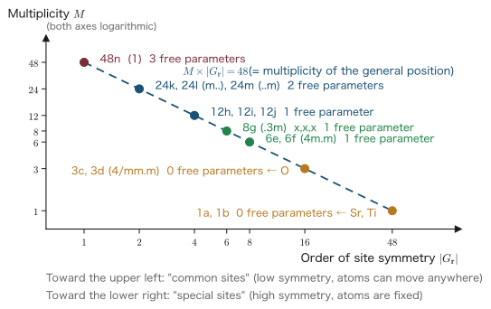
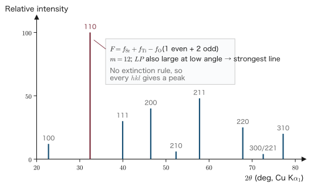

Appendix BCrystallography in Practice — International Tables, CIF, VESTA, and CrystOD
In Chapters 1 through 5 we acquired the basic vocabulary for describing crystals—lattice, unit cell, reciprocal lattice, point group, space group, and Wyckoff position. But the wall that a student newly assigned to a laboratory first runs into is usually not there. The wall is “So how do you actually do it?”
A senior member tells you, “Take a look at the structure of this material in $\mathrm{VESTA}$.” You try to get the structure from a paper, but the $\mathrm{ICSD}$ says $Pbnm$ while the $\mathrm{Materials\ Project}$ says $Pnma$, and you can no longer tell which is correct. You write a $\mathrm{CIF}$ yourself, and 160 atoms appear in a cell that should contain 20. You open a page of the International Tables and find a sea of symbols, with no idea where to start reading—these are all walls that cannot be overcome merely by “knowing” the contents of Chapters 1 through 5.
This appendix is a practical manual for getting over that wall. We read one page of the International Tables entry by entry, write a $\mathrm{CIF}$ line by line, follow the operations of $\mathrm{VESTA}$ step by step, learn the quirks of the databases, and finally list the “common pitfalls.” The style differs from that of the theory chapters, but what lies behind it is exactly the set of tools we built in Chapters 4 and 5. Indeed, what those tools are actually good for becomes visible here for the first time.
The concrete examples treated in the main text are unified around the perovskite oxides that the Mochizuki Research Group actually studies—$\mathrm{SrTiO_3}$, $\mathrm{BaTiO_3}$, and $\mathrm{CaTiO_3}$. Although they are all “$\mathrm{ABO_3}$ perovskites,” the space group changes among $Pm\bar{3}m$, $P4mm$, and $Pnma$, and with it the Wyckoff positions and the number of free parameters change dramatically. Placing these three side by side is the quickest way to convince oneself that symmetry determines structure.
- The layout of one page of International Tables for Crystallography Volume A, and how to read through $Pnma$ (No. 62) and $Pm\bar{3}m$ (No. 221)
- Wyckoff positions in practice: multiplicity $\times$ order of the site symmetry = multiplicity of the general position, and how to count degrees of freedom
- “An atom sitting on a site with zero degrees of freedom cannot move” = symmetry determines the structure
- Writing a $\mathrm{CIF}$ file yourself: the minimal tags, the difference from the format that lists the symmetry operations explicitly, and common errors
- $\mathrm{VESTA}$: polyhedral display, bond settings, calculation of powder XRD patterns (and its correspondence to the structure factor of Chapter 3), electron density, and the cell transformation matrix
- Symmetry analysis with $\mathrm{CrystOD}$—where the knowledge of Chapters 4 and 5 is used
- The characteristics of and cautions about Materials Project, ICSD, and COD. A computed structure is a calculated value at $0\ \mathrm{K}$, and the functional ($\mathrm{GGA}$ or $\mathrm{r^2SCAN}$) differs from entry to entry
- The conventions for citing software and structure data
- Differences in setting ($Pnma$ vs $Pbnm$), origin choice ($Fd\bar{3}m$), and hexagonal vs rhombohedral—a list of pitfalls in practice
B.1 How to Read International Tables Volume A
B.1.1 What is in it
International Tables for Crystallography (edited by the International Union of Crystallography, IUCr; hereafter “International Tables”) is the primary source for crystallography and consists of eight volumes in all. Among them, Volume A: Space-Group Symmetry describes each of the 230 space groups completely, in a spread of one to two pages per group.
“Completely” is no exaggeration. In principle, everything you might want to know about a given space group is written on this one page.
- The space-group symbol (short and full forms), the Schoenflies symbol, the point group, the crystal system, and the number
- The symmetry-element diagram and the general-position diagram
- The choice of origin, and the alternatives when there are several origins
- The asymmetric unit
- The list of all symmetry operations (with a geometric description)
- The generators
- The table of Wyckoff positions: multiplicity, Wyckoff letter, site symmetry, coordinates, and reflection conditions
- The symmetry of special projections, and the maximal subgroups and minimal supergroups
Conversely, learning to read this one page is the first hurdle in the practice of crystallography. Below, taking $Pnma$ (No. 62) as the main example, we read through the items one at a time from the top.
Supplement: Which edition to use
The latest edition of Volume A is currently the sixth edition (2016). It differs from the fifth edition (2002) and earlier in some of the notation (for example, the terminology corresponding to the _symmetry_ family of tags, and the introduction of the $e$ glide). Library copies are often the fourth or fifth edition, but the content of the space groups themselves (the symmetry operations and the Wyckoff positions) does not change from edition to edition, so in practice any of them will do.
When you do not have the printed book at hand, the Bilbao Crystallographic Server (cryst.ehu.es) provides most of the contents of the International Tables free of charge. In particular, you will use three of its programs routinely: GENPOS (general positions), WYCKPOS (Wyckoff positions), and HKLCOND (reflection conditions).
B.1.2 Layout of a page
On one page of the International Tables, the information is arranged from top to bottom in a nearly fixed order. If you first keep this overall map in mind, you will not get lost.
B.1.3 Reading $Pnma$ (No. 62) one item at a time
Example B.1: Reading the $Pnma$ page from the top
① Header.
At the upper left we find $D_{2h}^{16}$. This is the Schoenflies symbol, and it means that this is the sixteenth of the space groups whose point group is $D_{2h}$ (= $mmm$ in international notation). The Schoenflies symbol contains no information at all about the translations of the space group, so it is hardly used in practice. In the center is the short Hermann–Mauguin symbol $Pnma$; on the right are the point group $mmm$ and the crystal system, Orthorhombic.
The second line gives the number 62, the full Hermann–Mauguin symbol $P\,2_1/n\,2_1/m\,2_1/a$, and the Patterson symmetry $Pmmm$.
The full symbol is read as in Chapter 5. In an orthorhombic crystal the three positions correspond to $[100],[010],[001]$, so
- first position $2_1/n$: a $2_1$ screw axis along the $a$ axis, and an $n$ glide plane perpendicular to the $a$ axis
- second position $2_1/m$: a $2_1$ screw axis along the $b$ axis, and a mirror plane $m$ perpendicular to the $b$ axis
- third position $2_1/a$: a $2_1$ screw axis along the $c$ axis, and an $a$ glide plane perpendicular to the $c$ axis
The $n,m,a$ of the short symbol $Pnma$ pick out only these three planes. The screw axes are generated automatically from the planes, so they can be omitted.
The Patterson symmetry $Pmmm$ is the group for which “this much can be read directly from the diffraction intensities.” It is the Laue group $mmm$ with the lattice type $P$ attached (the discussion of Friedel's law in Chapter 4). It also means that to decide whether the group is $Pnma$ by diffraction, we must look not at the intensities themselves but at the systematic absences.
② Diagrams.
For an orthorhombic crystal, four diagrams are placed side by side: three symmetry-element diagrams viewed along the three directions $[001],[100],[010]$, and one general-position diagram. In the symmetry-element diagrams, a $2_1$ axis is drawn as a lens shape with half-arrowheads, a mirror plane as a thick solid line, glide planes as dashed and dotted lines (the line type differs with the direction of the glide), and an inversion center as a small circle. How to read the general-position diagram is explained in detail in the next subsection.
③ Origin and Asymmetric unit.
For $Pnma$ it says “Origin at $\bar{1}$.” That is, this table is written in coordinates with the origin placed at an inversion center. For a centrosymmetric space group, taking the inversion center as the origin is the standard choice. If you shift it arbitrarily, all of the coordinate tables below lose their meaning.
The asymmetric unit is $0 \le x \le \tfrac12$, $0 \le y \le \tfrac14$, $0 \le z \le 1$. Its volume is $\tfrac12 \times \tfrac14 \times 1 = \tfrac18$ of the unit cell. This is no coincidence. Since the multiplicity of the general position is 8, the unit cell is divided into eight congruent asymmetric units. The volume ratio of the asymmetric unit is always the reciprocal of the multiplicity of the general position.
④ Symmetry operations.
The eight symmetry operations are described geometrically, each with a number.
| Number | Written in coordinates | International Tables notation | Meaning |
|---|---|---|---|
| (1) | $x,\ y,\ z$ | $1$ | identity operation |
| (2) | $-x+\tfrac12,\ -y,\ z+\tfrac12$ | $2(0,0,\tfrac12)\ \ \tfrac14,0,z$ | $2_1$ screw axis along the $c$ axis, at position $(\tfrac14,0,z)$ |
| (3) | $-x,\ y+\tfrac12,\ -z$ | $2(0,\tfrac12,0)\ \ 0,y,0$ | $2_1$ screw axis along the $b$ axis, at position $(0,y,0)$ |
| (4) | $x+\tfrac12,\ -y+\tfrac12,\ -z+\tfrac12$ | $2(\tfrac12,0,0)\ \ x,\tfrac14,\tfrac14$ | $2_1$ screw axis along the $a$ axis, at position $(x,\tfrac14,\tfrac14)$ |
| (5) | $-x,\ -y,\ -z$ | $\bar{1}\ \ 0,0,0$ | inversion center at the origin |
| (6) | $x+\tfrac12,\ y,\ -z+\tfrac12$ | $a\ \ x,y,\tfrac14$ | $a$ glide plane perpendicular to $c$, $z=\tfrac14$ |
| (7) | $x,\ -y+\tfrac12,\ z$ | $m\ \ x,\tfrac14,z$ | mirror plane perpendicular to $b$, $y=\tfrac14$ |
| (8) | $-x+\tfrac12,\ y+\tfrac12,\ z+\tfrac12$ | $n(0,\tfrac12,\tfrac12)\ \ \tfrac14,y,z$ | $n$ glide plane perpendicular to $a$, $x=\tfrac14$ |
Whether you can read the “International Tables notation” column of this table is the first hurdle. We dissect it in the following Supplement.
⑤ Generators selected.
For $Pnma$ the entry reads “(1); $t(1,0,0)$; $t(0,1,0)$; $t(0,0,1)$; (2); (3); (5)”. This means that the three basic translations together with operations (2) ($2_1$ along $c$), (3) ($2_1$ along $b$), and (5) (inversion) suffice: the remaining five operations can be built as products.
Indeed, let us compute $(2)\cdot(3)$. First apply (3), then apply (2). $(x,y,z) \xrightarrow{(3)} (-x,\ y+\tfrac12,\ -z) \xrightarrow{(2)} (-(-x)+\tfrac12,\ -(y+\tfrac12),\ -z+\tfrac12) = (x+\tfrac12,\ -y-\tfrac12,\ -z+\tfrac12)$. Adding the lattice translation $+1$ turns $-y-\tfrac12$ into $-y+\tfrac12$, so this coincides with operation (4). ∎
Similarly, $(5)\cdot(2)$, $(5)\cdot(3)$, and $(5)\cdot(4)$ give (6), (7), and (8), respectively (multiplying by $\bar{1}$ changes a rotation into a rotoinversion).
⑥ Positions.
$Pnma$ has only four Wyckoff positions.
| Multiplicity | Wyckoff | site symmetry | Representative coordinates | Degrees of freedom | $M\times\abs{G_\rr}$ |
|---|---|---|---|---|---|
| 8 | $d$ | $1$ | $x,\ y,\ z$ | 3 | $8\times1=8$ |
| 4 | $c$ | $.m.$ | $x,\ \tfrac14,\ z$ | 2 | $4\times2=8$ |
| 4 | $b$ | $\bar{1}$ | $0,\ 0,\ \tfrac12$ | 0 | $4\times2=8$ |
| 4 | $a$ | $\bar{1}$ | $0,\ 0,\ 0$ | 0 | $4\times2=8$ |
The notation $.m.$ for the site symmetry means that, of the three positions of $mmm$ ($[100],[010],[001]$), only the second carries an $m$; that is, only the mirror plane perpendicular to the $b$ axis remains. The dot is a marker meaning “nothing in that direction.” The rule learned in Chapter 5, “the position of a symbol indicates a direction,” applies to site symmetry without any change.
⑦ Reflection conditions.
The reflection conditions for the general position (general conditions) are as follows.
- $0kl$: $k+l = 2n$ ← $n$ glide perpendicular to $a$
- $hk0$: $h = 2n$ ← $a$ glide perpendicular to $c$
- $h00$: $h = 2n$, $0k0$: $k = 2n$, $00l$: $l = 2n$ ← the three $2_1$ axes
These are exactly the systematic absences we derived in Chapter 3. The mirror plane $m$ perpendicular to $b$ involves no translation, so no condition is imposed on $h0l$. Where there are no systematic absences for a plane, there is a mirror plane—narrowing down the space group from a powder diffraction pattern amounts to following this correspondence in reverse.
Supplement: Dissecting the notation $2(0,0,\tfrac12)\ \ \tfrac14,0,z$ for symmetry operations
The description of a symmetry operation in the International Tables always takes the form of a three-part set: “type (translational part) position.”
| Part | Example | How to read it |
|---|---|---|
| Type | $2$ | 2-fold rotation ($3,4,6$ mean $n$-fold rotations; $m,a,b,c,n,d$ mean reflections or glides; $\bar{1},\bar{3},\bar{4},\bar{6}$ mean rotoinversions) |
| Translational part | $(0,0,\tfrac12)$ | The translation vector added simultaneously with the rotation or reflection. If it is not zero, the element is a screw axis or a glide plane |
| Position | $\tfrac14,0,z$ | The location of the fixed element. Since $z$ is a variable, it is an axis, which passes through $x=\tfrac14$, $y=0$ and runs along the $c$ direction |
For a plane, two variables appear in the position. For example, in $n(0,\tfrac12,\tfrac12)\ \ \tfrac14,y,z$, $y$ and $z$ are free, so it is a plane at $x=\tfrac14$, and the operation glides along this plane by $(0,\tfrac12,\tfrac12)$; that is, it is an $n$ glide that shifts by half a period along the diagonal of $b$ and $c$.
The correspondence with the Seitz notation $\{R\,|\,\bm{\tau}\}$ of Chapter 5 is clear. $R$ is the “type,” the component parallel to the element of $\bm{\tau}$ is the “translational part,” and the perpendicular component of $\bm{\tau}$ is absorbed into the “shift of the position.” We can understand the International Tables notation as a way of writing $\bm{\tau}$ decomposed into an “intrinsic glide” and a “matter of the choice of origin.”
B.1.4 How to read the general-position diagram
Of the figures in the International Tables, the one that confuses beginners most is the general-position diagram. Yet there are only three rules.
- Each circle represents one atom in the general position. There are (multiplicity of the general position) circles in all.
- A $+$ beside a circle means “height $z$,” $-$ means “height $-z$,” $\tfrac12+$ means “height $\tfrac12+z$,” and $\tfrac12-$ means “height $\tfrac12-z$.” Since the diagram is a projection, the information along the direction perpendicular to the page is supplied in this way.
- A comma “,” inside a circle indicates that the point is a mirror image (it was moved by an operation with $\det = -1$). A circle without a comma and a circle with one are related as right-handed and left-handed systems.
Why? What can we learn from being able to draw the general-position diagram?
The general-position diagram is, in short, “all the elements of the space group laid out in a visible form.” The number of circles equals the multiplicity of the general position, that is, $\abs{G} / \abs{T}$ (the number of elements of the space group divided by the translation group) = the order of the point group $\times$ the number of lattice points. For $Pnma$, $8 \times 1 = 8$ circles appear; for $Pm\bar{3}m$, $48 \times 1 = 48$; and for $Fd\bar{3}m$, $48 \times 4 = 192$ (the diagram for $Fd\bar{3}m$ is, understandably, completely black).
The positions where circles overlap—that is, positions where several of the eight images fall on the same point—are precisely the special positions (Wyckoff positions). In Figure B.2, as $y$ approaches $\tfrac14$, the pairs of circles on either side of the line $y=\tfrac14$ come closer and coincide exactly at $y=\tfrac14$. Eight become four. This is $4c$ (site symmetry $.m.$). A special position is “a place where circles overlap in the general-position diagram.” The discussion in the next section is nothing other than putting this one sentence into proper mathematical form.
B.1.5 Reading the $Pm\bar{3}m$ (No. 221) page
Example B.2: The $Pm\bar{3}m$ page
Header. $O_h^1$, $Pm\bar{3}m$, point group $m\bar{3}m$, Cubic, No. 221, full symbol $P\,4/m\,\bar{3}\,2/m$, Patterson symmetry $Pm\bar{3}m$.
The three positions of the full symbol correspond, for a cubic crystal, to $[100]$, $[111]$, and $[110]$ (Section 4.5). Therefore
- First position $4/m$: a fourfold axis along the $[100]$ direction, and a mirror plane perpendicular to it (that is, the $\{100\}$ planes)
- Second position $\bar{3}$: a threefold rotoinversion axis along the $[111]$ direction
- Third position $2/m$: a twofold axis along the $[110]$ direction, and a mirror plane on the $\{110\}$ planes
In the short symbol $Pm\bar{3}m$, the first $m$ refers to the $\{100\}$ planes and the last $m$ to the $\{110\}$ planes. These two $m$'s are different things—the point emphasized in Chapter 4 matters here as well.
Origin. “Origin at $m\bar{3}m$.” The origin itself is a point of the highest symmetry. Since $Pm\bar{3}m$ is a symmorphic space group, every operation of the point group can be written in a form that leaves the origin fixed.
Asymmetric unit. $0 \le x \le \tfrac12$, $0 \le y \le \tfrac12$, $0 \le z \le \tfrac12$, $z \le y \le x$. The volume is $\tfrac18 \times \tfrac16 = \tfrac1{48}$, which is the reciprocal of the multiplicity 48 of the general position. The factor $\tfrac16$ arises from “fixing the order of the three coordinates in one way” (there are $3! = 6$ permutations of three objects).
Symmetry operations. There are 48 of them. All have zero translational part and are signed permutations of $(x,y,z)$. The coordinates can be rearranged in $3! = 6$ ways and the sign of each component chosen in $2^3 = 8$ ways, so all $6\times8 = 48$ combinations appear exactly once. To say that a space group is symmorphic is to say that all of its symmetry operations can be written with “the rotation part only.”
Reflection conditions. “No conditions.” The lattice is $P$ and there are neither screw axes nor glide planes, so there are no systematic absences at all. Every $hkl$ can appear. Experimentally this is rather troublesome: without systematic absences as a clue, determining the space group has to rely on analysis of the intensities.
Symmetry of special projections. Projection along the $[001]$ direction gives the plane group $p4mm$. This is useful information when considering the surface of a thin film or an image from a transmission electron microscope.
Positions. $Pm\bar{3}m$ has 14 Wyckoff positions.
| Multiplicity $M$ | Wyckoff | site symmetry | Representative coordinates | $\abs{G_\rr}$ | Degrees of freedom | $M\abs{G_\rr}$ |
|---|---|---|---|---|---|---|
| 48 | $n$ | $1$ | $x,y,z$ | 1 | 3 | 48 |
| 24 | $m$ | $..m$ | $x,x,z$ | 2 | 2 | 48 |
| 24 | $l$ | $m..$ | $\tfrac12,y,z$ | 2 | 2 | 48 |
| 24 | $k$ | $m..$ | $0,y,z$ | 2 | 2 | 48 |
| 12 | $j$ | $m.m2$ | $\tfrac12,y,y$ | 4 | 1 | 48 |
| 12 | $i$ | $m.m2$ | $0,y,y$ | 4 | 1 | 48 |
| 12 | $h$ | $mm2..$ | $x,\tfrac12,0$ | 4 | 1 | 48 |
| 8 | $g$ | $.3m$ | $x,x,x$ | 6 | 1 | 48 |
| 6 | $f$ | $4m.m$ | $x,\tfrac12,\tfrac12$ | 8 | 1 | 48 |
| 6 | $e$ | $4m.m$ | $x,0,0$ | 8 | 1 | 48 |
| 3 | $d$ | $4/mm.m$ | $\tfrac12,0,0$ | 16 | 0 | 48 |
| 3 | $c$ | $4/mm.m$ | $0,\tfrac12,\tfrac12$ | 16 | 0 | 48 |
| 1 | $b$ | $m\bar{3}m$ | $\tfrac12,\tfrac12,\tfrac12$ | 48 | 0 | 48 |
| 1 | $a$ | $m\bar{3}m$ | $0,0,0$ | 48 | 0 | 48 |
Look at the rightmost column. In every row, $M \times \abs{G_\rr} = 48$. This is not a coincidence but a theorem (next section).
B.2 Wyckoff Positions — Symmetry Determines the Structure
We introduced the idea of Wyckoff positions in Section 5.6 of Chapter 5. Here we reorganize it as a tool for actually writing down a structure. When working with Wyckoff positions in practice, you need only the following three abilities.
- Given a set of coordinates, you can determine which Wyckoff position it is
- You can count the degrees of freedom of that position (the number of parameters to be refined)
- When the number of degrees of freedom is zero, you understand that the atom is completely fixed by symmetry
B.2.1 General positions and special positions
Definition: site symmetry group
The set of those elements of the space group $G$ that leave the point $\rr$ unmoved,
is called the site symmetry group (also called the point symmetry group) of the point $\rr$. Here $g\rr = \rr$ means “equal up to a lattice translation.”
When $G_\rr = \{E\}$ (only the identity operation), $\rr$ is said to lie at a general position. When $G_\rr$ contains operations other than the identity, $\rr$ is said to lie at a special position.
Supplement: The site symmetry group is always a point group
The elements of $G_\rr$ leave $\rr$ unmoved, so if we regard $\rr$ as the origin, they are all operations that contain no translation. Hence $G_\rr$ is isomorphic to one of the 32 crystallographic point groups. This is the reason why we “write the site symmetry in point-group symbols such as $4/mmm$, $.3m$, and $\bar{1}$.” Having counted the 32 point groups in Chapter 4 pays off directly here.
Some care is needed with the way the symbols are written, however. The site symmetry symbol is written with the same sequence of positions as the full symbol of the space group, and a dot “$.$” is placed in directions where there is no element. In $Pnma$ ($mmm$, with positions $[100],[010],[001]$), $.m.$ means “only the mirror plane perpendicular to $[010]$”; in $Pm\bar{3}m$ ($m\bar{3}m$, with positions $[100],[111],[110]$), $..m$ means “only the mirror planes of the $[110]$ type,” and $.3m$ means “the threefold axis along $[111]$ and the mirror planes of $[110]$.” Even when a lone $m$ is written, which direction that $m$ refers to is determined by its position.
Theorem B.1: Orbit–stabilizer theorem (multiplicity theorem)
Between the multiplicity $M(\rr)$ of a point $\rr$ (the number of points in the unit cell equivalent to $\rr$) and the order $\abs{G_\rr}$ of the site symmetry group, the relation
always holds. Here $M_{\rm gen}$ is the multiplicity of the general position, $\abs{P}$ is the order of the point group of the space group, and $n_{\rm lat}$ is the number of lattice points contained in the conventional cell ($P$: 1, $I$: 2, $C$: 2, $F$: 4, $R$ (hexagonal axes): 3).
Derivation: Theorem B.1 (Lagrange's theorem itself)
Consider the quotient group $G/T$ obtained by dividing the space group $G$ by the translation group $T$. $G/T$ is isomorphic to the point group $P$ and has order $\abs{P}$. However, when we count in units of the conventional cell, the lattice-centering translations (such as $(\tfrac12\tfrac12\tfrac12)$ for $I$) are also counted as “moves within the cell,” so the effective order is $\abs{P}\times n_{\rm lat}$. Let us denote this finite group by $\tilde{G}$. Then $\abs{\tilde{G}} = \abs{P}\, n_{\rm lat} = M_{\rm gen}$.
Step 1: $G_\rr$ is a subgroup of $\tilde{G}$. If $g_1, g_2 \in G_\rr$, then $g_1g_2\,\rr = g_1(g_2\rr) = g_1\rr = \rr$, so it is closed; multiplying both sides of $g\rr = \rr$ by $g^{-1}$ gives $\rr = g^{-1}\rr$, so it also contains inverse elements. It obviously contains the identity operation. Hence it is a subgroup.
Step 2: The set of images of $\rr$ is in one-to-one correspondence with the cosets. Write the set of images of $\rr$ (the orbit) as $O(\rr) = \{\,g\rr \mid g \in \tilde{G}\,\}$. Then $M(\rr) = \abs{O(\rr)}$.
Now suppose $g_1\rr = g_2\rr$ holds. Multiplying both sides by $g_2^{-1}$ from the left gives $g_2^{-1}g_1\,\rr = \rr$, that is, $g_2^{-1}g_1 \in G_\rr$. This is nothing other than $g_1 \in g_2 G_\rr$, that is, $g_1$ and $g_2$ belong to the same left coset. The converse follows by retracing the steps. Therefore
$g_1\rr = g_2\rr \iff g_1 G_\rr = g_2 G_\rr$
and the points of the orbit are in one-to-one correspondence with the left cosets.
Step 3: Use Lagrange's theorem. As proved in Chapter 6, the number of left cosets (the index) is $\abs{\tilde{G}}/\abs{G_\rr}$. Hence
$M(\rr) = \dfrac{\abs{\tilde{G}}}{\abs{G_\rr}} = \dfrac{M_{\rm gen}}{\abs{G_\rr}}$
Multiplying both sides by $\abs{G_\rr}$ gives Eq. \eqref{eq:B-orbit}. ∎
Note also that at a general position $G_\rr = \{E\}$, so $\abs{G_\rr} = 1$ and therefore $M = M_{\rm gen}$, which is consistent with the definition.
Physical Meaning: This theorem is a “tool for checking”
Its use in practice is simple. When you take a structure from a CIF or a database, compute $M \times \abs{G_\rr}$ for every atom and check that all the values are the same. If even one does not match, something is wrong somewhere.
For example, if a $Pnma$ structure ($M_{\rm gen} = 8$) lists “$4c$, site symmetry $\bar{1}$,” then $4\times2 = 8$ and the numbers at least agree, but the site symmetry of $4c$ in $Pnma$ is $.m.$, not $\bar{1}$ ($\bar{1}$ belongs to $4a$ and $4b$). Checking whether the coordinates have the form $x,\tfrac14,z$ immediately tells you which is correct.
A more frequent encounter is a mismatch between the multiplicities and the number of atoms. For $\mathrm{CaTiO_3}$ ($Pnma$) there are $4+4+4+8 = 20$ atoms and $Z=4$. If 160 atoms ($20\times8$) are displayed when you open it in $\mathrm{VESTA}$, it means that the CIF lists all the equivalent positions and in addition specifies the space group (see (1) in B.3.6).
B.2.2 How Wyckoff letters are assigned, and how to write them in practice
Wyckoff letters are assigned in alphabetical order $a, b, c, \ldots$, and there is a rule for the order. Starting from the positions of highest site symmetry (that is, smallest multiplicity), the letter $a$ is assigned first. For $Pm\bar{3}m$, the sequence starts at $1a$ ($m\bar{3}m$) and ends at $48n$ ($1$). For $Pnma$ it is $4a, 4b$ (both $\bar{1}$), $4c$ ($.m.$), and $8d$ ($1$). The general position is always assigned the last letter.
In practice one writes “multiplicity $\times$ Wyckoff letter” joined together, as in $4a$, $8c$, and $48n$. This way of writing is redundant as information (once the letter is fixed, the multiplicity is fixed too), but precisely because it is redundant it serves as a check. If a paper says “Ti occupies the $4b$ site,” the reader knows that there are four of them without looking up the table of $Pnma$.
Caution: Wyckoff letters depend on the space group and the setting
The expression “the $4c$ site” has no meaning unless the space group is stated explicitly. The $4c$ of $Pnma$ and the $4c$ of $Pbnm$ are different sites (if the setting differs, the form of the coordinates differs too). When reading a paper, always check the space-group symbol and the setting as a set.
Moreover, in space groups that have two origin choices (such as $Fd\bar{3}m$), the coordinates differ even for the same Wyckoff letter. We deal with this in Section B.8.
B.2.3 Counting degrees of freedom
What matters most in practice is, in fact, this.
Definition: Degrees of freedom of a Wyckoff position
The number of independent variables that appear in the representative coordinates of a Wyckoff position is called the degrees of freedom of that position.
- $x,\ y,\ z$ → 3 degrees of freedom (general position)
- $x,\ \tfrac14,\ z$ → 2 degrees of freedom ($4c$ of $Pnma$)
- $x,\ x,\ x$ → 1 degree of freedom ($8g$ of $Pm\bar{3}m$; once one $x$ is fixed, all three components are fixed)
- $0,\ \tfrac12,\ \tfrac12$ → 0 degrees of freedom ($3c$ of $Pm\bar{3}m$)
The total number of parameters needed to determine a crystal structure is the number of lattice parameters (fixed by the crystal system) + the sum of the degrees of freedom of all atoms.
Example B.3: Finding the site symmetry and degrees of freedom of $4c$ of $Pnma$ on our own from the symmetry operations
Without looking up the table, let us examine the point $(x,\tfrac14,z)$ using only the eight operations of Table B.1.
Procedure: Apply the eight operations in turn and look for those that return the point to the original (up to a lattice translation).
| Operation | Image of $(x,\tfrac14,z)$ | Returns to the original? |
|---|---|---|
| (1) $x,y,z$ | $(x,\tfrac14,z)$ | returns ✓ |
| (2) $\tfrac12-x,-y,\tfrac12+z$ | $(\tfrac12-x,-\tfrac14,\tfrac12+z)$ | × |
| (3) $-x,\tfrac12+y,-z$ | $(-x,\tfrac34,-z)$ | × |
| (4) $\tfrac12+x,\tfrac12-y,\tfrac12-z$ | $(\tfrac12+x,\tfrac14,\tfrac12-z)$ | × ($x$ and $z$ are shifted) |
| (5) $-x,-y,-z$ | $(-x,-\tfrac14,-z)$ | × |
| (6) $\tfrac12+x,y,\tfrac12-z$ | $(\tfrac12+x,\tfrac14,\tfrac12-z)$ | × |
| (7) $x,\tfrac12-y,z$ | $(x,\tfrac14,z)$ | returns ✓ |
| (8) $\tfrac12-x,\tfrac12+y,\tfrac12+z$ | $(\tfrac12-x,\tfrac34,\tfrac12+z)$ | × |
Let us verify operation (7). Substituting $y = \tfrac14$ gives $\tfrac12 - \tfrac14 = \tfrac14$. $x$ and $z$ do not change. Therefore $(x,\tfrac14,z) \to (x,\tfrac14,z)$, and for arbitrary $x, z$ this point does not move.
Hence $G_\rr = \{(1),(7)\}$, of order 2. Operation (7) is a mirror plane $m$ perpendicular to $b$, so the site symmetry is $.m.$. By Theorem B.1 the multiplicity is $8/2 = 4$. The degrees of freedom are the two parameters $x$ and $z$. We have now reproduced the whole row of $4c$ in Table B.2. ∎
If we examine $(0,0,\tfrac12)$ by the same procedure, the only operations that return it are (1) and (5) (inversion). For (5): $(0,0,\tfrac12) \to (0,0,-\tfrac12)$. Adding the lattice translation $+1$ to $-\tfrac12$ gives $\tfrac12$, so it returns ✓. Hence $G_\rr = \{1,\bar{1}\}$, the site symmetry is $\bar{1}$, the multiplicity is $8/2=4$, and there are 0 degrees of freedom. This is $4b$.
B.2.4 Comparing three perovskites
From here on is the highlight of this section. We look at how, even for the same $\mathrm{ABO_3}$ perovskite, the degrees of freedom of the structure change merely because the space group differs.
Example B.4: $\mathrm{SrTiO_3}$ ($Pm\bar{3}m$, cubic)
| Atom | Wyckoff | Coordinates | site symmetry | Degrees of freedom | Coordination |
|---|---|---|---|---|---|
| Sr | $1a$ | $0,\ 0,\ 0$ | $m\bar{3}m$ | 0 | 12-fold (cuboctahedron) |
| Ti | $1b$ | $\tfrac12,\ \tfrac12,\ \tfrac12$ | $m\bar{3}m$ | 0 | 6-fold (regular octahedron) |
| O | $3c$ | $0,\ \tfrac12,\ \tfrac12$ and two others | $4/mm.m$ | 0 | Linear coordination with two Ti atoms |
The number of atoms is $1+1+3 = 5$, corresponding exactly to the chemical formula $\mathrm{SrTiO_3}$ ($Z=1$).
The total number of degrees of freedom is zero. Since the crystal is cubic, the lattice constant is only $a$. Therefore the structure of $\mathrm{SrTiO_3}$ is completely determined by a single number, $a = 3.905\ \mathrm{Å}$. The Ti–O distance is $a/2 = 1.9525\ \mathrm{Å}$ and the Sr–O distance is $a/\sqrt{2} = 2.7613\ \mathrm{Å}$—all can be computed from $a$.
This is remarkable. Although there are as many as five atoms, there is only one structural parameter to refine. Symmetry imposes such a strong constraint.
Example B.5: Tetragonal $\mathrm{BaTiO_3}$ ($P4mm$, room-temperature phase)
Below about $393\ \mathrm{K}$ ($120\,^\circ\mathrm{C}$), $\mathrm{BaTiO_3}$ undergoes a phase transition from the cubic $Pm\bar{3}m$ to the tetragonal $P4mm$ and becomes ferroelectric. The Wyckoff positions of $P4mm$ (No. 99) are $1a$ ($4mm$, $0,0,z$), $1b$ ($4mm$, $\tfrac12,\tfrac12,z$), $2c$ ($2mm.$, $\tfrac12,0,z$ and $0,\tfrac12,z$), …, and the general position $8g$ ($1$).
| Atom | Wyckoff | Coordinates | site symmetry | Degrees of freedom | Representative value |
|---|---|---|---|---|---|
| Ba | $1a$ | $0,\ 0,\ z$ | $4mm$ | 1 (but used to fix the origin) | $z \equiv 0$ |
| Ti | $1b$ | $\tfrac12,\ \tfrac12,\ z$ | $4mm$ | 1 | $z \simeq 0.512$ |
| O(1) | $1b$ | $\tfrac12,\ \tfrac12,\ z$ | $4mm$ | 1 | $z \simeq -0.026$ |
| O(2) | $2c$ | $\tfrac12,\ 0,\ z$ | $2mm.$ | 1 | $z \simeq 0.487$ |
The number of atoms is $1+1+1+2 = 5$, $Z=1$. The third decimal place of the coordinates differs from one reference to another, so the values listed here are representative values meant to give a feeling for the order of magnitude.
What is decisively important here is that the $z$ coordinate is “floating.” $P4mm$ is a polar space group, and there is no symmetry element that fixes the origin along the $c$ axis. Therefore, shifting the $z$ of all atoms simultaneously by $\delta$ gives the same structure. To remove this indeterminacy, by convention the $z$ of one atom is fixed at zero (here Ba). As a result, the independent structural parameters are the three quantities $z_{\rm Ti}$, $z_{\rm O(1)}$, and $z_{\rm O(2)}$.
Since the crystal is tetragonal, there are two lattice constants, $a$ and $c$. In total, the structure is determined by five parameters. The count has increased from one for the cubic phase to five.
Physics: From the values $z_{\rm Ti} = 0.512$ and $z_{\rm O(1)} = -0.026$, let us compute the Ti–O distances along the $c$ axis. The upper O(1) is located at $z = 1-0.026 = 0.974$.
$d_{\rm short} = (0.974 - 0.512)\times c = 0.462 \times 4.034 = 1.86\ \mathrm{Å}$
$d_{\rm long} = (0.512-(-0.026))\times c = 0.538 \times 4.034 = 2.17\ \mathrm{Å}$
Ti is displaced from the center of the octahedron along the $c$ axis, and the upper and lower Ti–O distances split into $1.86$ and $2.17\ \mathrm{Å}$. This asymmetry directly gives rise to the spontaneous polarization. It is precisely because the site symmetry $4mm$ of $1a$ and $1b$ is a polar point group (Chapter 4) that this degree of freedom in $z$ can exist. The cubic $m\bar{3}m$ has no degrees of freedom, and the atoms had no way to move.
Example B.6: $\mathrm{CaTiO_3}$ ($Pnma$, GdFeO$_3$ type)
$\mathrm{CaTiO_3}$—the very mineral from which the name “perovskite” derives—is not cubic at room temperature but orthorhombic, $Pnma$. Because $\mathrm{Ca^{2+}}$ is smaller than $\mathrm{Sr^{2+}}$, the $\mathrm{TiO_6}$ octahedra tilt, and the symmetry is lowered.
| Atom | Wyckoff | Form of coordinates | site symmetry | Degrees of freedom | Representative value |
|---|---|---|---|---|---|
| Ca | $4c$ | $x,\ \tfrac14,\ z$ | $.m.$ | 2 | $x\simeq0.035,\ z\simeq-0.006$ |
| Ti | $4b$ | $0,\ 0,\ \tfrac12$ | $\bar{1}$ | 0 | — |
| O(1) | $4c$ | $x,\ \tfrac14,\ z$ | $.m.$ | 2 | $x\simeq0.49,\ z\simeq0.07$ |
| O(2) | $8d$ | $x,\ y,\ z$ | $1$ | 3 | $x\simeq0.29,\ y\simeq0.04,\ z\simeq0.71$ |
The number of atoms is $4+4+4+8 = 20$, $Z = 4$. Since $\mathrm{CaTiO_3}$ has four formula units, $20 = 4\times5$ is consistent. The representative values of the coordinates differ from one reference to another, so they are only rough estimates.
The total number of degrees of freedom is $2+0+2+3 = 7$. Since the crystal is orthorhombic, there are three lattice constants, $a,b,c$. In total, 10 parameters. This is clearly more than the one of $Pm\bar{3}m$ and the five of $P4mm$.
And the most important observation: Ti is at $4b$ ($0,0,\tfrac12$), which has zero degrees of freedom. Since the site symmetry is $\bar{1}$, the site where Ti sits is an inversion center. An atom sitting at an inversion center cannot move in either direction. If it moved, the inversion symmetry would be broken and the structure would no longer be $Pnma$.
Therefore, as long as it is $Pnma$, $\mathrm{CaTiO_3}$ can never become ferroelectric. The Ti displacement that produced the polarization in $\mathrm{BaTiO_3}$ is forbidden here by symmetry. Part of the reason why many distorted perovskites are paraelectric can be read off from a single row of the Wyckoff table.
Physical Meaning: An atom at a site with zero degrees of freedom cannot move
Putting the three tables side by side, the following correspondence emerges.
| $\mathrm{SrTiO_3}$ | $\mathrm{BaTiO_3}$ (room temperature) | $\mathrm{CaTiO_3}$ | |
|---|---|---|---|
| Space group | $Pm\bar{3}m$ (221) | $P4mm$ (99) | $Pnma$ (62) |
| Point group | $m\bar{3}m$ | $4mm$ | $mmm$ |
| Centrosymmetry | Yes | No | Yes |
| Polarity | No | Yes ($[001]$) | No |
| $Z$ (number of formula units) | 1 | 1 | 4 |
| Number of atoms in the unit cell | 5 | 5 | 20 |
| Wyckoff position of the B site (Ti) | $1b$ | $1b$ | $4b$ |
| site symmetry of the B site | $m\bar{3}m$ | $4mm$ | $\bar{1}$ |
| Degrees of freedom of the B site | 0 | 1 ($z$) | 0 |
| Number of lattice constants | 1 | 2 | 3 |
| Number of coordinate parameters | 0 | 3 | 7 |
| Total | 1 | 5 | 10 |
| Ferroelectricity | No (quantum paraelectric) | Yes | No |
Restated in the language of Wyckoff positions, the necessary condition for becoming ferroelectric is as follows.
“The site symmetry of the B site is a polar point group, and a degree of freedom exists along the polar axis.”
Both the $m\bar{3}m$ of $Pm\bar{3}m$ and the $\bar{1}$ of $Pnma$ are centrosymmetric, so neither satisfies this condition. Only the $4mm$ of $P4mm$ is polar and has the degree of freedom $z$. The fact, counted in Chapter 4, that “10 of the 32 point groups are polar” has here taken the concrete form of “which Wyckoff positions allow the atoms to move.”
We can also read it in the opposite direction. When searching for a new ferroelectric by first-principles calculation, we first determine the space group of the high-symmetry phase, look over its table of Wyckoff positions, and count “which site’s atoms can move in which direction, and by how much.” If all the sites are ones that cannot move, no polarization arises from that structure. This is the starting point of a structure search.
B.2.5 The relation between multiplicity and site symmetry in a single figure

Why? A phase transition is a “move of Wyckoff positions”
Let us restate the cubic → tetragonal transition of $\mathrm{BaTiO_3}$ in the language of this figure.
In the cubic phase, Ba is at $1a$ ($m\bar{3}m$, $\abs{G_\rr}=48$), Ti is at $1b$ ($m\bar{3}m$), and O is at $3c$ ($4/mm.m$, $\abs{G_\rr}=16$). All of them are at the lower right of Figure B.3, with zero degrees of freedom.
When the structure drops to the tetragonal $P4mm$, the point group is lowered from $m\bar{3}m$ (order 48) to $4mm$ (order 8). The multiplicity of the general position also changes as $48 \to 8$. Ba is at $1a$ ($4mm$, $\abs{G_\rr}=8$), Ti is at $1b$ ($4mm$), and the $3c$ of O, which was a single position in the cubic phase, splits into $1b$ (one atom) and $2c$ (two atoms). $3 = 1 + 2$.
This phenomenon in which one Wyckoff position splits into several is called Wyckoff splitting. Each of the resulting positions can carry its own independent $z$, so degrees of freedom are born. Symmetry lowering = splitting of sites = acquisition of degrees of freedom = structural distortion. This chain is the essence of a structural phase transition.
How each Wyckoff position splits is determined by the group–subgroup relation, and symmetry-analysis tools such as WYCKSPLIT of the Bilbao Crystallographic Server and $\mathrm{CrystOD}$, mentioned in Section B.5, compute it automatically. Still, you should understand with this figure what you are asking them to compute.
B.3 Writing a CIF File Yourself
B.3.1 What is a CIF?
The CIF (Crystallographic Information File) is the standard text format for crystal structures defined by the IUCr. Its extension is .cif. It is human-readable plain text and, at the same time, machine-readable—this is the main reason it became so widespread. Whenever you publish a structure in a paper, retrieve a structure from a database, or have $\mathrm{VESTA}$ read a structure, a CIF is involved.
Anyone can “read” a CIF, but surprisingly few students can “write” one themselves. Once you can write one, however, the following things become much easier all at once.
- Reproduce a structure and view it in $\mathrm{VESTA}$ from nothing but the lattice constants and atomic coordinates given in the table of a paper
- Convert the result of a first-principles calculation (such as a $\mathrm{POSCAR}$) into a CIF that preserves the symmetry
- Build virtual structures (element substitution, oxygen vacancies, superlattices) by hand
B.3.2 The grammar of CIF: just four rules
Definition: The syntax of CIF
- A data block starts with a line of the form
data_something. A single file may contain several. - Tag–value pairs: write
_tagname, followed by a space and then the value. If the value contains spaces, enclose it in'…'or"…". - Loops: list the tags after
loop_, and then list the values, the same number of values per row as there are tags. This is the mechanism for writing tables. - Comments run from
#to the end of the line. Blank lines may be inserted freely. Tag names are not case-sensitive.
A number followed by parentheses, for example 3.9050(3), gives the standard deviation of the last digit. In this case it means $3.9050 \pm 0.0003\ \mathrm{Å}$. Experimental values always carry it, but you may omit it when writing a CIF yourself.
B.3.3 The minimal set of tags
The number of tags needed to determine a structure uniquely is, in fact, surprisingly small.
| Category | Tag | Content |
|---|---|---|
| Lattice | _cell_length_a | Lattice constant $a$ (the unit must be $\mathrm{Å}$) |
_cell_length_b | $b$ | |
_cell_length_c | $c$ | |
_cell_angle_alpha | $\alpha$ (unit: degrees) | |
_cell_angle_beta | $\beta$ | |
_cell_angle_gamma | $\gamma$ | |
| Symmetry | _symmetry_space_group_name_H-M | Hermann–Mauguin symbol of the space group (the new name is _space_group_name_H-M_alt) |
_symmetry_Int_Tables_number | Space-group number (the new name is _space_group_IT_number) | |
| Atoms | _atom_site_label | Atom label (Sr1, O2, etc.; you may choose freely) |
_atom_site_type_symbol | Element symbol (it can also be written with the ionic valence, as in Ti4+) | |
_atom_site_fract_x/y/z | Fractional coordinates (by convention, taken from 0 up to but not including 1) | |
_atom_site_occupancy | Occupancy (1.0 for full occupation) | |
_atom_site_U_iso_or_equiv | Isotropic atomic displacement parameter $U_{\rm iso}$ ($\mathrm{Å}^2$) |
Caution: Do not confuse $U$ and $B$
There are two conventions for the atomic displacement parameter (the quantity formerly called the “temperature factor”). When the damping factor multiplying the atomic scattering factor is written as
$\exp\!\left[-B \dfrac{\sin^2\theta}{\lambda^2}\right] = \exp\!\left[-8\pi^2 U \dfrac{\sin^2\theta}{\lambda^2}\right]$
$B$ is called the Debye–Waller factor ($B$ factor) and $U$ the mean square displacement. The two are related by
CIF defines both tags, _atom_site_U_iso_or_equiv ($U$) and _atom_site_B_iso_or_equiv ($B$), so always check which tag is being used. Typical values for an oxide at room temperature are $U \simeq 0.005$–$0.015\ \mathrm{Å}^2$, that is, $B \simeq 0.4$–$1.2\ \mathrm{Å}^2$. If the $U$ column reads $0.8$, it is very likely that a value of $B$ was entered by mistake ($U=0.8\ \mathrm{Å}^2$ would mean that the atoms vibrate with an amplitude of $\sqrt{0.8}\simeq0.9\ \mathrm{Å}$, and the crystal would be melted).
B.3.4 A complete CIF for $\mathrm{SrTiO_3}$
Now let us actually write one. Below is a CIF for $\mathrm{SrTiO_3}$ ($Pm\bar{3}m$, $a = 3.905\ \mathrm{Å}$), pared down as far as it can go. If you paste it into a text editor and save it under the name SrTiO3.cif, you can open it directly in $\mathrm{VESTA}$.
# --- SrTiO3, cubic perovskite (room temperature) ------------------
data_SrTiO3
_chemical_name_common 'strontium titanate'
_chemical_formula_sum 'Sr Ti O3'
_chemical_formula_weight 183.49
_cell_length_a 3.9050
_cell_length_b 3.9050
_cell_length_c 3.9050
_cell_angle_alpha 90.0
_cell_angle_beta 90.0
_cell_angle_gamma 90.0
_cell_volume 59.55
_cell_formula_units_Z 1
_symmetry_cell_setting cubic
_symmetry_space_group_name_H-M 'P m -3 m'
_symmetry_Int_Tables_number 221
loop_
_atom_site_label
_atom_site_type_symbol
_atom_site_fract_x
_atom_site_fract_y
_atom_site_fract_z
_atom_site_occupancy
_atom_site_U_iso_or_equiv
Sr1 Sr 0.00000 0.00000 0.00000 1.0 0.0060
Ti1 Ti 0.50000 0.50000 0.50000 1.0 0.0040
O1 O 0.00000 0.50000 0.50000 1.0 0.0080
# --- end ---------------------------------------------------------
Example B.7: Checking each line of this CIF
Lattice constant and volume. Since the crystal is cubic, $V = a^3 = 3.9050^3$. With $3.9050^2 = 15.249$, multiplying by $3.9050$ gives $V = 59.548\ \mathrm{Å}^3$. This agrees with _cell_volume 59.55 in the CIF. All the angles are $90.0$ degrees—just as the definition of a cubic crystal requires.
Formula weight. $\mathrm{Sr}\ 87.62 + \mathrm{Ti}\ 47.87 + 3\times\mathrm{O}\ 16.00 = 87.62+47.87+48.00 = 183.49$.
Density check (this is the most effective one). The density is
$\rho = \dfrac{Z\,M}{N_{\rm A}\,V}$
Here $Z=1$, $M = 183.49\ \mathrm{g/mol}$, $V = 59.548\ \mathrm{Å}^3 = 59.548\times10^{-24}\ \mathrm{cm^3}$, and $N_{\rm A} = 6.022\times10^{23}\ \mathrm{mol^{-1}}$. Computing the denominator first gives
$N_{\rm A}V = 6.022\times10^{23} \times 59.548\times10^{-24} = 6.022\times59.548\times10^{-1} = 35.86\ \mathrm{cm^3/mol}$
Hence $\rho = 183.49/35.86 = 5.12\ \mathrm{g/cm^3}$. The measured density of $\mathrm{SrTiO_3}$ is $5.11\ \mathrm{g/cm^3}$, so the two agree perfectly.
Always perform this density check after writing a CIF. If you have confused $\mathrm{nm}$ and $\mathrm{Å}$ for the lattice constant, the density is off by a factor of $1000$; if you have written equivalent positions twice, the miscounted $Z$ makes it off by an integer factor. An error is found within seconds.
Atomic coordinates. Sr is at $(0,0,0)$ = $1a$, Ti at $(\tfrac12,\tfrac12,\tfrac12)$ = $1b$, and O at $(0,\tfrac12,\tfrac12)$ = the representative point of $3c$. Checking against Table B.3, their multiplicities are $1, 1, 3$, respectively. The total is $1+1+3 = 5$ atoms, $Z=1$ ✓.
Supplement: Why $Pm\bar{3}m$ is written as P m -3 m
A CIF is an ASCII text file, so an overbar cannot be written. By convention, therefore, $\bar{3}$ is written -3, $\bar{4}$ is written -4, and $\bar{1}$ is written -1. Notations such as Pm-3m, Fd-3m, I4/mcm, and P4_2/mnm (a subscript is written with _) are common to the tools around $\mathrm{VESTA}$, $\mathrm{spglib}$, $\mathrm{pymatgen}$, and $\mathrm{VASP}$.
In many cases the spaces between the characters may be inserted or omitted (both 'P m -3 m' and 'Pm-3m' are accepted), but some software is strict, so it is safest to use the notation in a CIF downloaded from a database as it is.
B.3.5 The format that writes the symmetry operations explicitly
In Code B.1 we wrote only the space-group symbol and left the generation of equivalent positions to the software. CIF, however, also has a format in which the symmetry operations are written out one by one. This one is free of ambiguity.
_symmetry_space_group_name_H-M 'P n m a'
_symmetry_Int_Tables_number 62
loop_
_symmetry_equiv_pos_site_id
_symmetry_equiv_pos_as_xyz
1 'x, y, z'
2 '-x+1/2, -y, z+1/2'
3 '-x, y+1/2, -z'
4 'x+1/2, -y+1/2, -z+1/2'
5 '-x, -y, -z'
6 'x+1/2, y, -z+1/2'
7 'x, -y+1/2, z'
8 '-x+1/2, y+1/2, z+1/2'
_space_group_symop_id / _space_group_symop_operation_xyz are used, but the content is the same.Why? Which format should be used
The format giving only the space-group symbol is short and easy to read, but it carries a danger. For space groups that have several settings or origin choices for the same symbol ($Fd\bar{3}m$, $R\bar{3}c$, $P2_1/c$, etc.), there is no telling which one the software will adopt. With $Fd\bar{3}m$ alone, one cannot decide whether the atomic coordinates refer to origin choice 1 or 2.
The format listing the symmetry operations explicitly does not depend on the interpretation of the symbol at all, because the rules of the coordinate transformations are written out as they are. The CIFs output by the Bilbao Crystallographic Server and by $\mathrm{ICSD}$ usually take this format.
Practical conclusion: a CIF that you hand to someone else, or attach to the supporting information of a paper, should always use the format with the symmetry operations written explicitly. If you only want to have $\mathrm{VESTA}$ read it on your own machine, the symbol alone is enough. If you open it in $\mathrm{VESTA}$ and choose “File → Export Data → CIF”, it writes out the format with the symmetry operations expanded.
Example B.8: The 48 symmetry operations of $Pm\bar{3}m$
For reference, we write out the 48 operations of $Pm\bar{3}m$. All of them are rearrangements of $(\pm x, \pm y, \pm z)$, and the translational part is zero (because the group is symmorphic).
loop_
_symmetry_equiv_pos_site_id
_symmetry_equiv_pos_as_xyz
1 'x, y, z' 13 'y, x, -z' 25 '-x, -y, -z' 37 '-y, -x, z'
2 '-x, -y, z' 14 '-y, -x, -z' 26 'x, y, -z' 38 'y, x, z'
3 '-x, y, -z' 15 'y, -x, z' 27 'x, -y, z' 39 '-y, x, -z'
4 'x, -y, -z' 16 '-y, x, z' 28 '-x, y, z' 40 'y, -x, -z'
5 'z, x, y' 17 'x, z, -y' 29 '-z, -x, -y' 41 '-x, -z, y'
6 'z, -x, -y' 18 '-x, z, y' 30 '-z, x, y' 42 'x, -z, -y'
7 '-z, -x, y' 19 '-x, -z, -y' 31 'z, x, -y' 43 'x, z, y'
8 '-z, x, -y' 20 'x, -z, y' 32 'z, -x, y' 44 '-x, z, -y'
9 'y, z, x' 21 'z, y, -x' 33 '-y, -z, -x' 45 '-z, -y, x'
10 '-y, z, -x' 22 'z, -y, x' 34 'y, -z, x' 46 '-z, y, -x'
11 'y, -z, -x' 23 '-z, y, x' 35 '-y, z, x' 47 'z, -y, -x'
12 '-y, -z, x' 24 '-z, -y, -x' 36 'y, z, -x' 48 'z, y, x'
Check of the structure. Numbers 1–24 form the point group $432$ ($O$, order 24, all with $\det=+1$), and the addition of numbers 25–48, obtained by multiplying by the inversion, gives $m\bar{3}m = 432 \otimes \{E,\bar{1}\}$ (order 48). What we stated in Chapter 4, that “$m\bar{3}m$ is the group obtained by adding an inversion center to $432$,” is now visible directly in the form of the 48 lines.
B.3.6 Common errors
Caution: The five major CIF errors
(1) Writing out all the equivalent positions and also specifying the space group.
This is the most frequent accident. For $\mathrm{SrTiO_3}$, if you write all three rows for O, $(0,\tfrac12,\tfrac12)$, $(\tfrac12,0,\tfrac12)$, and $(\tfrac12,\tfrac12,0)$, and also write _symmetry_space_group_name_H-M 'P m -3 m', the software applies all 48 operations to each of the three rows. As a result, there are nine O atoms (still three if the software removes duplicates, nine if it does not).
Remedy: If you specify the space group, write only the representative point of each Wyckoff position for the atoms. Conversely, if you want to write all the atoms, set the space group to 'P 1' (No. 1). These are the only two choices; there is no middle ground.
The symptom is easy to recognize: when you open the file in $\mathrm{VESTA}$, the number of atoms in Structure parameters does not match what you expected, or atoms are drawn on top of one another at the same place (the bonds become abnormally short).
(2) The sum of the occupancies does not add up.
When you write the solid solution $\mathrm{Ba_{0.5}Sr_{0.5}TiO_3}$, you place Ba and Sr on the same $1a$ site and set _atom_site_occupancy to $0.5$ for each. The sum must be exactly $1.0$. If you set them to $0.5$ and $0.6$, there are $1.1$ atoms at that site, and both the chemical formula and the density are wrong.
For an oxygen vacancy, $\mathrm{SrTiO_{3-\delta}}$, set the occupancy of O to $1-\delta/3$. For $\delta=0.1$ this is $0.9667$. The Structure parameters dialog of $\mathrm{VESTA}$ displays the sum of the occupancies for each site, so you can check it there.
(3) Units of the lattice constants.
The _cell_length_* entries of a CIF are always in $\mathrm{Å}$. They must not be written in $\mathrm{nm}$. Since $3.905\ \mathrm{Å} = 0.3905\ \mathrm{nm}$, if you write the numerical value in $\mathrm{nm}$ as it is, the volume $V = a^3$ becomes $1/1000$ of the correct value, and, from $\rho = ZM/(N_{\rm A}V)$, the density becomes $1000$ times too large. If you see a CIF with “$a = 0.3905$”, suspect this first.
Conversely, the table in a paper is sometimes written in $\mathrm{nm}$ (found in some fields in Japan and in older papers from German-speaking countries). To convert to $\mathrm{Å}$, multiply by 10.
(4) Confusing fractional coordinates with Cartesian coordinates.
The _atom_site_fract_x entry of a CIF is a fractional coordinate ($0 \le x < 1$). The $\mathrm{POSCAR}$ of $\mathrm{VASP}$ has two modes, Direct (fractional coordinates) and Cartesian (Cartesian coordinates, in units of $\mathrm{Å}$), so the two are easily confused during conversion. If all the coordinates in a $\mathrm{POSCAR}$ are less than $1$, it is Direct; if numbers of the order of $\mathrm{Å}$ are listed, it is Cartesian.
The relation between the Cartesian coordinates $\bm{R} = (X,Y,Z)$ and the fractional coordinates $(x,y,z)$ is $\bm{R} = x\aa + y\bb + z\cc$. For a cubic crystal this is simply $X = ax$, but for monoclinic and triclinic crystals $\aa,\bb,\cc$ are not orthogonal, so a matrix must be applied.
(5) Mismatch between the space-group symbol and the number, or between the settings.
_symmetry_space_group_name_H-M 'P b n m' and _symmetry_Int_Tables_number 62 are correct as far as the number goes ($Pbnm$ is an alternative setting of No. 62). However, many programs generate the symmetry operations of the standard setting $Pnma$ from the number, so they expand the $Pbnm$ coordinates with the $Pnma$ operations, and a completely different structure appears.
Remedy: When you use a nonstandard setting, always write the symmetry operations explicitly (in the format of Code B.2). Alternatively, interchange the axes to convert to the standard setting before making the CIF. Section B.8 deals with the concrete conversion.
Example B.9: Fixing a broken CIF
The following CIF contains three errors. Point out all of them.
data_broken
_cell_length_a 0.4594
_cell_length_b 0.4594
_cell_length_c 0.2959
_cell_angle_alpha 90.0
_cell_angle_beta 90.0
_cell_angle_gamma 90.0
_symmetry_space_group_name_H-M 'P 42/m n m'
_symmetry_Int_Tables_number 136
loop_
_atom_site_label
_atom_site_type_symbol
_atom_site_fract_x
_atom_site_fract_y
_atom_site_fract_z
_atom_site_occupancy
Ti1 Ti 0.0000 0.0000 0.0000 1.0
Ti2 Ti 0.5000 0.5000 0.5000 1.0
O1 O 0.3048 0.3048 0.0000 0.7
Answer.
- The units of the lattice constants are $\mathrm{nm}$. The lattice constants of rutile $\mathrm{TiO_2}$ are $a = 4.594\ \mathrm{Å}$ and $c = 2.959\ \mathrm{Å}$. They must be multiplied by 10.
- Two rows have been written for Ti. In $P4_2/mnm$ (No. 136), $(0,0,0)$ is Wyckoff $2a$, and $(\tfrac12,\tfrac12,\tfrac12)$ is its equivalent position. Since the space group is specified, the single row $(0,0,0)$ suffices. If two rows are written, there are four Ti atoms, and the chemical formula becomes $\mathrm{Ti_2O_2}$.
- The occupancy of O is $0.7$. The O of rutile has full occupancy, so it should be $1.0$. If it stays at $0.7$, the composition becomes $\mathrm{TiO_{1.4}}$.
Not an error, but a format worth noting. There are two conventions for writing the subscript of $4_2$. The one recommended by the CIF dictionary is the format in which the components of the symbol are separated by spaces and the subscript is written simply as a digit, as in 'P 42/m n m', and the CIFs distributed by ICSD and COD follow it. On the other hand, tools of the spglib and pymatgen family express the subscript with an underscore, as in P4_2/mnm. Both are in wide circulation, so we cannot simply declare one of them a “violation of the standard”. However, translation between programs sometimes fails, so it is good to remove the ambiguity by also giving the space-group number and the symmetry operations.
The correct rutile $\mathrm{TiO_2}$ has $a = 4.5937$ and $c = 2.9587\ \mathrm{Å}$, with Ti at $2a$ ($0,0,0$, site symmetry $m.mm$) and O at $4f$ ($x,x,0$, $x \simeq 0.3048$, site symmetry $m.2m$). The number of atoms is $2+4 = 6$, and $Z = 2$. Check using Theorem B.1: the point group of $P4_2/mnm$ is $4/mmm$ (order 16), and since the lattice is $P$, $M_{\rm gen} = 16$. $2 \times 8 = 16$ ✓, $4\times4 = 16$ ✓.
B.4 VESTA in Practice
VESTA (Visualization for Electronic and STructural Analysis) is crystal-structure visualization software developed by Koichi Momma and Fujio Izumi. It is free of charge and runs on Windows, macOS, and Linux. In Japanese crystallography and materials-science laboratories it has become the de facto standard tool.
VESTA is often thought of as “software that turns a structure into a picture,” but that is only part of what it does. VESTA can do the following:
- Draw structures (ball-and-stick models, polyhedra, space-filling)
- Calculate bond lengths, bond angles, and polyhedral distortions
- Calculate powder X-ray and neutron diffraction patterns
- Visualize volumetric data such as electron densities, wave functions, and difference densities
- Transform the cell (primitive $\leftrightarrow$ conventional, construction of superlattices)
- Detect and standardize symmetry
- Convert among many file formats (CIF, POSCAR, XSF, CHGCAR, PDB, …)
Below we follow the operations scene by scene, for the situations in which they are actually used in research. Menu names vary somewhat from version to version, so if you cannot find an item, look for one with a similar name.
B.4.1 Opening a structure and displaying it with polyhedra
- Open a CIF (or POSCAR, CONTCAR) with
File → Open. When opening a POSCAR, you may need to specify the file format asVASP. - Choose the display style in the
Objectspanel on the right (or in thePropertiesdialog):Ball-and-stick,Space-filling,Polyhedral, orWireframe. - To display polyhedra, bonds must first be defined. Open
Edit → Bondsand set the pair of central atom (Ti) and coordinating atom (O), together with the range of distances to be regarded as bonds (for example $\mathrm{Min} = 0$, $\mathrm{Max} = 2.5\ \mathrm{Å}$). - When you check
Objects → Polyhedra, $\mathrm{TiO_6}$ octahedra are drawn. - Specify the displayed range with
Boundary. If you widen it slightly, for example from $-0.1$ to $1.1$ for each of $x, y, z$, atoms and polyhedra that straddle the cell boundary are displayed without being cut off.
Supplement: How to decide the rough bond-length cutoff
What value to give $\mathrm{Max}$ is in fact a physical judgment. For $\mathrm{SrTiO_3}$, Ti–O $= 1.95\ \mathrm{Å}$ and Sr–O $= 2.76\ \mathrm{Å}$, so with $\mathrm{Max} = 2.2\ \mathrm{Å}$ only Ti–O is regarded as a bond and only $\mathrm{TiO_6}$ octahedra are drawn. With $\mathrm{Max} = 3.0\ \mathrm{Å}$, Sr–O also becomes a bond, even the $\mathrm{SrO_{12}}$ cuboctahedra are drawn, and the picture turns completely black.
As a rough estimate, taking about $1.15$ times the sum of the ionic radii picks up only the first coordination shell. Shannon's table of ionic radii (for example $0.605\ \mathrm{Å}$ for $\mathrm{Ti^{4+}}$ in sixfold coordination and $1.38\ \mathrm{Å}$ for $\mathrm{O^{2-}}$ in fourfold coordination) is an indispensable table for crystal chemistry, so it is good to keep it at hand.
B.4.2 Calculating a powder XRD pattern
This is the most valuable function of VESTA in practice. Suppose you have measured the XRD of a synthesized sample but cannot tell whether the target phase has formed. If you calculate the pattern from the CIF of the intended structure and overlay it, you can judge at a glance.
- Open
Utilities → Powder Diffraction Pattern. - Set the wavelength. A laboratory X-ray diffractometer usually uses $\mathrm{Cu\ K\alpha}$, so choose $\lambda = 1.5406\ \mathrm{Å}$ ($\mathrm{K\alpha_1}$). For $\mathrm{Mo\ K\alpha}$ it is $0.7107\ \mathrm{Å}$; for synchrotron radiation, enter the value used in the experiment. For neutron diffraction, enter the neutron wavelength and switch to the mode that uses scattering lengths.
- Set the range of $2\theta$. The standard for powder XRD is about $10^\circ$–$80^\circ$.
- Set the peak shape and width. With a $\mathrm{FWHM}$ (full width at half maximum) of about $0.1^\circ$, the pattern looks close to an experimental one. The standard peak shape is the pseudo-Voigt.
- The result is obtained as a table of $2\theta$, $d$, $hkl$, $\abs{F}$, and relative intensity, and it is also displayed directly as a graph. With
Saveit can be written out as text.
Derivation: What VESTA calculates internally
Recall the structure factor of Chapter 3. When atom $j$ in the unit cell is at the fractional coordinates $(x_j,y_j,z_j)$, the structure factor of the reflection $hkl$ is
Here $f_j$ is the atomic scattering factor, $o_j$ is the occupancy, and the last exponential is the Debye–Waller factor.
From here on is the part that Kittel would dispose of with “all that remains is to calculate the intensity.” The intensity of a measured powder pattern is $\abs{F}^2$ multiplied by four factors.
Let us write out the meaning of each.
- $m_{hkl}$: the multiplicity factor. In a powder sample the crystallites are randomly oriented, so all the planes that are equivalent by symmetry overlap at the same $2\theta$. For $\{110\}$ of a cubic crystal, the 12 planes $(110),(101),(011),(1\bar{1}0),\ldots$ come at the same angle, so $m = 12$. $\{100\}$ has 6 planes and $\{111\}$ has 8, and a general $\{hkl\}$ ($h,k,l$ all different from one another and none of them zero) has 48. This factor is the symmetry of the point group itself.
- $L(\theta)$: the Lorentz factor. $L = 1/(\sin^2\theta\cos\theta)$. It is a geometrical factor that arises because the “chance” for a reciprocal lattice point to intersect the Ewald sphere (Chapter 3) depends on the angle.
- $P(\theta)$: the polarization factor. $P = (1+\cos^2 2\theta)/2$. It arises because the incident X-rays are unpolarized. $L$ and $P$ are usually combined and written $LP = (1+\cos^2 2\theta)/(2\sin^2\theta\cos\theta)$. In the literature there is also a convention in which the factor $1/2$ is absorbed into the scale factor $s$, giving $LP = (1+\cos^2 2\theta)/(\sin^2\theta\cos\theta)$, and the numerical examples below are also calculated in this convention (since only intensity ratios matter, the conclusion does not change).
- $A$: the absorption factor. It is determined by the sample shape and the linear absorption coefficient. In the flat-plate reflection geometry (Bragg–Brentano) it is almost independent of angle, so it is often ignored.
A concrete example of the effect of $LP$. At $2\theta = 32.4^\circ$ ($\theta = 16.2^\circ$),
$\sin^2\theta = 0.0778$, $\cos\theta = 0.9603$, $\cos^2 2\theta = (0.8446)^2 = 0.7133$
$LP = \dfrac{1+0.7133}{0.0778\times0.9603} = \dfrac{1.7133}{0.0747} = 22.9$
On the other hand, at $2\theta = 46.48^\circ$ ($\theta = 23.24^\circ$),
$\sin^2\theta = 0.1556$, $\cos\theta = 0.9189$, $\cos^2 2\theta = (0.6884)^2 = 0.4739$
$LP = \dfrac{1.4739}{0.1556\times0.9189} = \dfrac{1.4739}{0.1430} = 10.3$
$LP$ alone makes a difference of a factor of $2.2$. It is because of this factor that low-angle peaks look stronger.∎
Example B.10: Calculating the powder XRD of $\mathrm{SrTiO_3}$ by hand
Before having VESTA calculate it, let us calculate it ourselves. Take $a = 3.905\ \mathrm{Å}$ and $\lambda = 1.5406\ \mathrm{Å}$.
Step 1: Peak positions. The interplanar spacing of a cubic crystal is $d_{hkl} = a/\sqrt{h^2+k^2+l^2}$. From Bragg's law $2d\sin\theta = \lambda$,
$\sin\theta = \dfrac{\lambda}{2d} = \dfrac{\lambda\sqrt{h^2+k^2+l^2}}{2a}$
For $(110)$, $\sqrt{2} = 1.4142$, so $\sin\theta = 1.5406\times1.4142/(2\times3.905) = 2.1787/7.810 = 0.27897$. Thus $\theta = 16.20^\circ$ and $2\theta = 32.40^\circ$.
Step 2: Structure factor. Sr is at $(0,0,0)$, Ti at $(\tfrac12,\tfrac12,\tfrac12)$, and O at $(0,\tfrac12,\tfrac12)$, $(\tfrac12,0,\tfrac12)$, $(\tfrac12,\tfrac12,0)$. Substituting into \eqref{eq:B-sf} and setting the Debye–Waller factor and the occupancy to $1$, we obtain
$F(hkl) = f_{\rm Sr} + f_{\rm Ti}e^{i\pi(h+k+l)} + f_{\rm O}\left[e^{i\pi(k+l)}+e^{i\pi(h+l)}+e^{i\pi(h+k)}\right]$
Here we used $e^{2\pi i \cdot \frac12 n} = e^{i\pi n} = (-1)^n$. All that remains is to separate cases according to whether $h,k,l$ are even or odd.
| Parities of $h,k,l$ | $(-1)^{h+k+l}$ | Sum of the three O terms | $F$ | Examples |
|---|---|---|---|---|
| All even | $+1$ | $+3$ | $f_{\rm Sr}+f_{\rm Ti}+3f_{\rm O}$ | $(200),(220)$ |
| All odd | $-1$ | $+3$ | $f_{\rm Sr}-f_{\rm Ti}+3f_{\rm O}$ | $(111),(311)$ |
| Two even + one odd | $-1$ | $-1$ | $f_{\rm Sr}-f_{\rm Ti}-f_{\rm O}$ | $(100),(210)$ |
| One even + two odd | $+1$ | $-1$ | $f_{\rm Sr}+f_{\rm Ti}-f_{\rm O}$ | $(110),(211)$ |
Let us check only the calculation of the third column. For $(110)$, $k+l = 1$ (odd), $h+l = 1$ (odd), and $h+k = 2$ (even), so $(-1)+(-1)+(+1) = -1$. For $(100)$, $k+l = 0$ (even), $h+l = 1$ (odd), and $h+k = 1$ (odd), giving $(+1)+(-1)+(-1) = -1$.
Step 3: Confirming that there are no systematic absences. In none of the four cases does $F$ vanish. This agrees with the statement in the International Tables (B.1.5) that $Pm\bar{3}m$ has a $P$ lattice and is symmorphic, so that it has no systematic absences at all. A peak appears at every $hkl$. This is the characteristic feature of the XRD pattern of a simple perovskite.
Step 4: Magnitudes of the intensities. At $\theta=0$ the atomic scattering factor equals the atomic number, so $f_{\rm Sr}\simeq38$, $f_{\rm Ti}\simeq22$, and $f_{\rm O}\simeq8$. However, $f$ decreases with increasing $\sin\theta/\lambda$, so the actual values are smaller. At $(110)$ ($\sin\theta/\lambda = 0.181\ \mathrm{Å^{-1}}$), roughly $f_{\rm Sr}\simeq30$, $f_{\rm Ti}\simeq17.5$, and $f_{\rm O}\simeq5.6$. Therefore
$F(110) \simeq 30+17.5-5.6 = 41.9$, $\abs{F}^2 \simeq 1760$
At $(200)$ ($\sin\theta/\lambda = 0.256\ \mathrm{Å^{-1}}$), $f_{\rm Sr}\simeq26$, $f_{\rm Ti}\simeq15.5$, and $f_{\rm O}\simeq4.6$ or so, so
$F(200) \simeq 26+15.5+3\times4.6 = 55.3$, $\abs{F}^2 \simeq 3060$
Looking at $\abs{F}^2$ alone, $(200)$ is $1.7$ times stronger. However, when we multiply by the remaining factors of \eqref{eq:B-intensity}, the order is reversed.
$I(110) \propto 1760 \times 12 \times 22.9 = 4.8\times10^5$
$I(200) \propto 3060 \times \ \ 6 \times 10.3 = 1.9\times10^5$
The ratio is $2.5$. In the actual powder pattern of $\mathrm{SrTiO_3}$ as well, $(110)$ is the strongest line and $(200)$ is about $40\%$ of it. If we forget the multiplicity factor and the $LP$ factor, the answer comes out reversed—this is the reason for writing out \eqref{eq:B-intensity} carefully.∎

Why? What to look for when comparing a calculated pattern with a measurement
The peak positions are shifted: the lattice constant is different. The sample may be a solid solution, may be strained, or may be at a different temperature. If all the peaks are shifted to the low-angle side, the lattice has expanded.
A peak is split: the symmetry has been lowered. If a crystal you took to be cubic turns out to be tetragonal, $(200)$ splits into $(002)$ and $(200)$. The cubic-to-tetragonal transition of $\mathrm{BaTiO_3}$ is exactly this case, and the splitting for $c/a = 1.010$ is clearly visible near $2\theta \simeq 45^\circ$.
A peak that should be there is missing: either there is preferred orientation (the crystallites of the sample are aligned along a particular direction) or the phase is different in the first place.
There are extra peaks: they are impurity phases or superlattice reflections. When octahedral tilting or cation ordering occurs, weak peaks appear at positions that were forbidden in the parent structure. The $Pnma$ structure of $\mathrm{CaTiO_3}$ shows superlattice reflections that cannot be explained by the unit cell of the cubic perovskite. Finding them is experimental evidence of a structural phase transition.
B.4.3 Viewing electron densities and difference densities
Visualizing the output of first-principles calculations ($\mathrm{VASP}$, $\mathrm{Quantum\ ESPRESSO}$) is also a major use of VESTA.
- Open the $\mathrm{VASP}$
CHGCAR(total electron density) orPARCHG(partial charge density, the contribution of a specific band and a specific $\kk$ point) directly withFile → Open. The structure and the volumetric data are read in at the same time. - Set the isosurface level with
Properties → Isosurfaces. Check whether the unit is $e/\mathrm{Å^3}$ or $e/$cell. - To view a cross section, use
Utilities → 2D Data Display. You can obtain the section by specifying a $(hkl)$ plane or three points. - To make a difference density, subtract one volumetric data set from another. Read in the second file with
Edit → Edit Data → Volumetric Dataand specify the operation (subtract). This is the standard method for viewing the redistribution of charge accompanying bond formation.
Supplement: What the difference density shows
If we subtract the “density obtained by simply placing isolated atoms at the same positions” (the procrystal) from the “total electron density of the crystal,” we can see where the electrons have moved because of chemical bonding. In a strongly covalent bond, a positive region (where electrons have gathered) appears at the midpoint of the bond; if the bond is strongly ionic, positive appears around the anion and negative around the cation.
In the perovskite $\mathrm{BaTiO_3}$, a clear accumulation of covalent charge is seen along the Ti–O bond. This is a direct visualization of the second-order Jahn–Teller effect mentioned in Chapter 4—the hybridization of the empty $3d$ orbital of $\mathrm{Ti}$ with the $2p$ orbital of $\mathrm{O}$ stabilizes the displacement.
B.4.4 Cell transformation matrix
Of the functions of VESTA, the cell transformation is the one that leads to mistakes unless the underlying reasoning is properly understood. The relation between the conventional cell and the primitive cell that you learned in Chapters 1 and 2 appears here directly in the form of a matrix.
Definition: Basis transformation matrix $P$ and origin shift $\bm{p}$
When we go from the original basis vectors $(\aa,\bb,\cc)$ to the new basis vectors $(\aa',\bb',\cc')$, we write the transformation by multiplying the row of vectors by a matrix from the right (the convention of the International Tables).
That is, the first column of $P$ gives the components of $\aa'$ expressed in the original basis, the second column gives $\bb'$, and the third column gives $\cc'$.
The fractional coordinates transform inversely. When the origin is shifted by $\bm{p}$ (components in the original basis),
The volume ratio of the cells is $V'/V = \det P$.
Derivation: Why do the coordinates transform with $P^{-1}$?
The physical position vector $\rr$ does not depend on the choice of basis. Therefore
$\rr = x\aa + y\bb + z\cc = x'\aa' + y'\bb' + z'\cc'$
(here we assume no origin shift). Written in matrix form,
$\rr = (\aa,\bb,\cc)\begin{pmatrix}x\\y\\z\end{pmatrix} = (\aa',\bb',\cc')\begin{pmatrix}x'\\y'\\z'\end{pmatrix}$
Substituting \eqref{eq:B-P} here, we obtain
$(\aa,\bb,\cc)\begin{pmatrix}x\\y\\z\end{pmatrix} = (\aa,\bb,\cc)\,P\begin{pmatrix}x'\\y'\\z'\end{pmatrix}$
Since $(\aa,\bb,\cc)$ are independent, comparing the coefficients on both sides gives
$\begin{pmatrix}x\\y\\z\end{pmatrix} = P\begin{pmatrix}x'\\y'\\z'\end{pmatrix}$, that is, $\begin{pmatrix}x'\\y'\\z'\end{pmatrix} = P^{-1}\begin{pmatrix}x\\y\\z\end{pmatrix}$
When the basis changes by $P$, the components change by $P^{-1}$. The basis and the components transform “in opposite directions”—this is the same structure as when we treated reciprocal lattice vectors in Chapter 3 (covariant and contravariant). When the origin is shifted by $\bm{p}$, it suffices to first subtract $\bm{p}$ from the coordinates and then multiply by $P^{-1}$. ∎
Example B.11: Three frequently used transformation matrices
(1) Face-centered cubic $F$ → primitive cell.
As you learned in Chapter 2, the primitive vectors of fcc are the three vectors connecting the face centers.
$\aa' = \tfrac12(\bb+\cc)$, $\bb' = \tfrac12(\cc+\aa)$, $\cc' = \tfrac12(\aa+\bb)$
Writing this in the form of \eqref{eq:B-P}, we have
$P_F = \dfrac{1}{2}\begin{pmatrix}0&1&1\\1&0&1\\1&1&0\end{pmatrix}$
The determinant is $\det\begin{pmatrix}0&1&1\\1&0&1\\1&1&0\end{pmatrix} = 0\cdot(0-1) - 1\cdot(0-1) + 1\cdot(1-0) = 0+1+1 = 2$; multiplying by $(\tfrac12)^3 = \tfrac18$ gives $\det P_F = \tfrac14$. The volume of the primitive cell is $1/4$ that of the conventional cell—consistent with the fact that the conventional cell of fcc contains four lattice points.
(2) Body-centered cubic $I$ → primitive cell.
$P_I = \dfrac{1}{2}\begin{pmatrix}-1&1&1\\1&-1&1\\1&1&-1\end{pmatrix}$
$\det\begin{pmatrix}-1&1&1\\1&-1&1\\1&1&-1\end{pmatrix} = -1(1-1) - 1(-1-1) + 1(1+1) = 0+2+2 = 4$; the factor $\times\tfrac18$ then gives $\det P_I = \tfrac12$. The conventional cell of bcc contains two lattice points ✓.
(3) Cubic perovskite → $Pnma$ cell.
The $Pnma$ cell of an octahedrally tilted perovskite such as $\mathrm{CaTiO_3}$ is built from the cubic pseudo-perovskite lattice $(\aa_p,\bb_p,\cc_p)$ ($a_p \simeq 3.8$–$4.0\ \mathrm{Å}$) as
$\aa_o = \aa_p - \cc_p$, $\bb_o = 2\bb_p$, $\cc_o = \aa_p + \cc_p$
In matrix form this is
$P_{\rm pero} = \begin{pmatrix}1&0&1\\0&2&0\\-1&0&1\end{pmatrix}$
The determinant is $1(2\cdot1 - 0\cdot0) - 0 + 1(0\cdot0 - 2\cdot(-1)) = 2 + 2 = 4$. The volume is multiplied by four, that is, $Z = 4$. This agrees with the fact that $Z$ of $\mathrm{CaTiO_3}$ was 4 in Table B.6.
We can also predict the lattice constants. If $a_p = 3.82\ \mathrm{Å}$, then $\abs{\aa_o} = \abs{\cc_o} = \sqrt{2}\,a_p = 5.40\ \mathrm{Å}$ and $\abs{\bb_o} = 2a_p = 7.64\ \mathrm{Å}$. The measured values for $\mathrm{CaTiO_3}$ are $a=5.442$, $b=7.639$, $c=5.380\ \mathrm{Å}$ (Table B.6). They agree closely with the prediction. The deviation ($a \ne c$) is precisely the distortion caused by the tilting of the octahedra.
Supplement: Procedure for the operation in VESTA
- Open
Edit → Edit Data → Unit Cell. - Pressing the
Transformbutton brings up fields for entering the $3\times3$ matrix and the origin shift vector. - Enter the matrix and press
OK. The atoms are automatically rearranged into the new cell. - If you only want to make a superlattice, enter the diagonal matrix $\mathrm{diag}(2,2,2)$, which gives a cell $8$ times larger, $2\times2\times2$. This is the standard operation for building a supercell for a first-principles phonon calculation.
Whether the components of $\aa'$ go into a row or a column of the input fields can differ in convention from one program to another. After entering them, always check the volume (_cell_volume or the cell constants) and verify that the multiplication factor is what you intended. Even experienced users make the mistake of entering the inverse matrix.
B.4.5 Detecting the symmetry
When a structure is optimized in a first-principles calculation, all that comes out is a list of atomic coordinates ($\mathrm{CONTCAR}$); the space group is not written in it. We need to have the program determine “what is the space group of this structure?”
- In VESTA, the symmetry can be searched for with the search button next to the space-group field in the dialog of
Edit → Edit Data → Unit Cell. Alternatively,Utilities → Standardization of Crystal Dataconverts the structure to the standard setting and then determines the space group. - The setting of the tolerance is essential. The coordinates obtained from a calculation contain numerical errors of about $10^{-4}$, so if the tolerance is set to $10^{-5}$, no symmetry is found and the result is $P1$. Conversely, if it is made large, such as $0.1\ \mathrm{Å}$, even symmetries that are in fact broken are judged to be “present.”
- In practice, it is best to try several values in the range $10^{-3}$ to $10^{-2}\ \mathrm{Å}$ and see where the space group switches. For a physically meaningful structure, the same answer is obtained over a wide range of tolerance.
Caution: Raising the tolerance to obtain “high symmetry” is dangerous
When the result of a structure optimization should be $Pnma$ but only $P2_1/m$ comes out, raising the tolerance may produce $Pnma$. But this also means that “the structure actually deviates slightly from $Pnma$, but the difference is below the tolerance.” Judging whether the deviation is a numerical error or a physically meaningful distortion (for example, a ferroelectric distortion) is the job of a human, not of the software.
A rough guide for the judgment is to convert the magnitude of the deviation into energy. Compare the total energies of the structure with the symmetry imposed and the structure without it; if the difference is $1\ \mathrm{meV/atom}$ or less, regard it as numerical error, and if it is $10\ \mathrm{meV/atom}$ or more, regard it as a real distortion. The energy gain due to the ferroelectric distortion of $\mathrm{BaTiO_3}$ is about $10$–$20\ \mathrm{meV}$ per formula unit, and since one formula unit has five atoms, this is $2$–$4\ \mathrm{meV/atom}$, which falls exactly in the gray region between these two guides. This is why calculations for ferroelectrics are difficult.
B.5 Symmetry Analysis with CrystOD
CrystOD is a software package for symmetry analysis developed in the Mochizuki Research Group. It is written in $\mathrm{Python}$ and can be installed with pip install crystod. It has two faces: a set of tools used from the command line, and a $\mathrm{Python}$ library.
From the standpoint of this book, CrystOD is a tool that automatically carries out, for actual crystal structures, the group theory we learned in Part II (Chapters 6–11). The character tables we constructed by hand in Chapter 8, the projection operators we computed by hand in Chapter 9, the reductions into irreducible representations we counted by hand in Chapter 10, and the representations of space groups and the $\kk$ points treated in Chapter 11 all run once a single structure file is given.
Supplement: The range of analyses CrystOD can handle
According to the published documentation, CrystOD covers the following areas.
- Representation theory of point groups and space groups: display of character tables, decomposition of direct products of irreducible representations, reduction of reducible representations, ligand-field splitting, generation of basis functions, and computation of cosets
- SALC analysis of crystal orbitals: for specified elements and orbitals, the symmetry-adapted linear combinations at each high-symmetry $\kk$ point and the assignment of irreducible representations
- Brillouin zone: drawing of the first Brillouin zone, zone folding accompanying a superlattice, and a list of special $\kk$ points
- Phonons: assignment of irreducible representations to phonon modes, visualization of eigenvectors, and generation of modulated structures
- Symmetry-mode analysis: given two CIFs, one of a high-symmetry structure and one of a low-symmetry structure, the distortion between them is decomposed by irreducible representation
- Interconversion of structure files: conversion between $\mathrm{POSCAR} \leftrightarrow \mathrm{CIF}$, and determination of the symmetry
- Molecular systems: determination of the molecular point group, molecular SALCs, and construction of molecular orbital diagrams
For the details of the functions, the exact syntax of the commands, and the supported versions, consult the CrystOD documentation of the research group (https://mochizuki-tus.github.io/CrystOD). Development is ongoing, so please read what is written here as a rough estimate.
B.5.1 Where the knowledge from Chapters 4 and 5 is used
One can use a tool such as CrystOD “as a black box.” To read its output correctly, however, the knowledge of Parts I and II is needed just as it stands. Let us organize the correspondence.
| What appears in the output | Knowledge needed to read it | Corresponding place in this book |
|---|---|---|
| Space-group symbols ($Pnma$, $Pm\bar{3}m$) | Which direction each character of the international notation refers to | Chapter 5, Section 5.4; this appendix, B.1 |
| Site symmetry ($4mm$, $.3m$, $\bar{1}$) | The 32 point groups, and the rule that the position of a symbol indicates a direction | Chapter 4; this appendix, B.2 |
| Mulliken symbols ($A_{1g}$, $T_{2g}$, $E_u$) | Naming rules for irreducible representations, dimension and parity | Chapter 8, Section 8.9 |
| Reduction $\Gamma = A_{1g}\oplus E_g\oplus T_{1u}$ | The reduction formula $n_i = \frac1h\sum_R \chi(R)\chi_i(R)^*$ | Chapter 8, Section 8.8 |
| $\kk$-point labels ($\Gamma$, $X$, $M$, $R$) and the little co-group | The group of the wave vector, compatibility relations | Chapter 11 |
| CDML labels ($R_4^-$, $M_3^+$) | The irreducible representations of the little co-group of a $\kk$ point and their labeling (the CDML notation itself is not treated in this book) | Chapter 11, Sections 11.5 and 11.9 |
| Irreducible representations of phonon modes | Reduction of the representation with the displacements as its basis, infrared and Raman activity | Chapter 10, Sections 10.6 and 10.7; Chapter 13 |
| Amplitudes of distortion modes | The group–subgroup relation, order parameters | Chapter 5; Chapter 19 |
Why? Symmetry-mode analysis is so powerful
Given the two structures before and after a phase transition—for example, the cubic $Pm\bar{3}m$ and the tetragonal $P4mm$ of $\mathrm{BaTiO_3}$—symmetry-mode analysis decomposes the “deviation from the cubic structure” into components labeled by irreducible representation.
If we naively take the differences of the coordinates, we merely obtain a list of $5$ atoms $\times 3$ components $= 15$ numbers. Decomposing by irreducible representations, however, shows that only a few of them are meaningful independent components. In the transition to $P4mm$, the main component is $\Gamma_4^-$ (a polar mode, an antiphase displacement of $\mathrm{Ti}$ and $\mathrm{O}$), and the rest are secondary components accompanying the strain.
This is exactly the same operation as constructing SALCs with projection operators in Chapter 9. It decomposes a 15-dimensional reducible representation into irreducible representations and finds the amplitude of each irreducible component. It is laborious by hand, but the principle is that of Chapter 9 itself.
Moreover, once we know which irreducible representation is the main component, we can expand the Landau free energy in the corresponding order parameter (Chapter 19). Since we need to write only the terms that symmetry allows, the starting point of the phenomenological theory is fixed automatically. The path group theory → order parameter → Landau theory has become a task that a tool can carry out.
Caution: The tool does not make judgments for you
A symmetry-determination tool mechanically answers “the symmetry possessed by this set of coordinates” under a given tolerance. It does not, however, judge
- whether that tolerance is appropriate,
- whether the symmetry found is physically meaningful, or
- whether it is consistent with the superlattice reflections seen in experiment.
As stated in Section B.4.5, this is the job of a human being. Do not swallow the output of a tool whole and report “the space group was $P1$”; instead, trace why it came out as $P1$. In most cases the cause is a rounding error in the coordinates, or a lattice constant that was made slightly asymmetric.
B.6 Structure Databases
Most of the structures we deal with in research are not determined by ourselves but taken from databases. Each database, however, has its own character, and using one without knowing its quirks can lead to trouble.
| Name | Contents | Access | Cautions |
|---|---|---|---|
| Materials Project | Structures and properties optimized by first-principles calculations (over $15$×10⁴ entries) | Free of charge, registration required, REST API available | Calculated values at $0\ \mathrm{K}$. $\mathrm{GGA}$ (PBE), $\mathrm{GGA}+U$, and $\mathrm{r^2SCAN}$ are mixed, so check run_type for each entry. PBE structures often have lattice constants $1$–$2\%$ larger than the measured values |
| ICSD | Measured structures of inorganic compounds (about $29$×10⁴ entries) | Paid (institutional subscription) | Old data and wrong space-group assignments are mixed in. Check the $R$ factor and the original paper |
| COD | Open crystal structures (about $50$×10⁴ entries, including organic compounds) | Completely free of charge | Anyone can register entries, so the quality varies |
| CSD | Measured structures of organic compounds and metal complexes | Paid | Almost no inorganic solids are included |
| AFLOW / OQMD | Databases of first-principles calculations | Free of charge | Same cautions as for the Materials Project |
| ICDD PDF | Cards of powder diffraction patterns | Paid | The standard for phase identification. A table of peaks, not the structure itself |
| Bilbao Crystallographic Server | Group-theoretical tools, not structures | Free of charge | Wyckoff positions, subgroups, irreducible representations, tables of $\kk$ vectors, etc. |
B.6.1 Why the lattice constants of calculated structures deviate
Physical Meaning: $\mathrm{GGA}$ expands the lattice
Most of the structures listed in the Materials Project and similar databases were obtained by using $\mathrm{GGA}$ (mostly $\mathrm{PBE}$) as the exchange-correlation functional of density functional theory (DFT) and minimizing the total energy at $0\ \mathrm{K}$.
We must not, however, assume that “all Materials Project structures are PBE.” Since 2022 the Materials Project has incorporated $\mathrm{r^2SCAN}$ calculations into its core data, so $\mathrm{GGA}$, $\mathrm{GGA}+U$, and $\mathrm{r^2SCAN}$ are mixed (bands and densities of states are still mainly $\mathrm{GGA}$/$\mathrm{GGA}+U$). Before using an entry, we should check individually its run_type, thermo_type, and task ID, as well as whether $+U$ was used and the conditions of the structure optimization.
In what follows we have in mind structures optimized with $\mathrm{GGA}$ (PBE). Such structures deviate systematically from the measured values. There are three causes of the deviation.
- Systematic error of the functional. $\mathrm{LDA}$ overestimates the bonding and tends to give lattice constants $1$–$2\%$ smaller, whereas $\mathrm{PBE}$, conversely, tends to give values $1$–$2\%$ larger. For $\mathrm{SrTiO_3}$, whose measured value is $a = 3.905\ \mathrm{Å}$, $\mathrm{PBE}$ gives about $3.94$–$3.95\ \mathrm{Å}$ and $\mathrm{LDA}$ about $3.86\ \mathrm{Å}$. However, this is a typical tendency seen in many solids, not a guarantee. Both the sign and the magnitude of the deviation can change depending on the kind of material, the magnetic state, dispersion forces, strong correlation, the pseudopotential, and the temperature of the experiment being compared. When discussing a specific material, check for yourself after matching the convergence conditions and the experimental temperature.
- Zero-point vibration is not included. The calculation gives the energy minimum with the atoms classically at rest. A real crystal undergoes zero-point vibration even at $0\ \mathrm{K}$ and is slightly expanded because of anharmonicity.
- Thermal expansion is not included. Measured values are usually those at room temperature ($300\ \mathrm{K}$). With a linear thermal expansion coefficient $\alpha \simeq 10^{-5}\ \mathrm{K^{-1}}$, the crystal expands from $0\ \mathrm{K}$ to $300\ \mathrm{K}$ by $\Delta a/a \simeq 3\times10^{-3}$, that is, by $0.3\%$. This is a matter of the Grüneisen parameter in Chapter 14.
Practical consequence: If a calculated structure is used as it is for an XRD simulation, the peak positions are shifted by about $0.3^\circ$ in $2\theta$. This does no harm for phase identification, but such a structure cannot be used for a precise comparison of lattice constants. Conversely, a frequently adopted approach is to fix the measured lattice constants and optimize only the internal coordinates (that is, to use the experimental lattice constants).
B.6.2 When to doubt an ICSD structure
Caution: Measured structures also contain errors
ICSD is a database of measured structures, but not every structure it contains is correct. In the following cases we should go back to the original paper and check.
- The $R$ factor is large (for example $R > 0.10$). The quality of the refinement is low.
- Anomalous bond lengths. Be suspicious if a Ti–O distance is $1.5\ \mathrm{Å}$ or $2.6\ \mathrm{Å}$. If we open the structure in VESTA, the bond lengths can be checked immediately. A deviation of more than $\pm10\%$ from the sum of the ionic radii ($\mathrm{Ti^{4+}} + \mathrm{O^{2-}} \simeq 1.99\ \mathrm{Å}$) calls for attention.
- Anomalous $U_{\rm iso}$. A negative value, or a value exceeding $0.05\ \mathrm{Å}^2$, is a sign that the occupancy or the site assignment is wrong.
- The symmetry may be too high. In powder diffraction, symmetry lowering (such as octahedral tilting) is easily overlooked, and a structure that is really $Pnma$ is sometimes reported as $Pm\bar{3}m$. This applies especially to old reports and to systems where the positions of light elements (oxygen) matter.
- The data are old. For data from before the 1970s, both the instrumental resolution and the refinement methods differ from those of today.
Conversely, if several independent reports agree, the structure can be trusted. Checking how many entries exist for the same material and whether their lattice constants agree is the easiest quality check.
B.6.3 Fetching structures through the API
The Materials Project provides a $\mathrm{REST\ API}$, and structures can be fetched directly from $\mathrm{Python}$. An $\mathrm{ID}$ has the form mp- followed by digits.
# Example: fetch a structure from the Materials Project and write it out as a CIF
from mp_api.client import MPRester
from pymatgen.symmetry.analyzer import SpacegroupAnalyzer
with MPRester("YOUR_API_KEY") as m:
struct = m.get_structure_by_material_id("mp-XXXX")
sga = SpacegroupAnalyzer(struct, symprec=1e-3)
print(sga.get_space_group_symbol(), sga.get_space_group_number())
# Write the standardized conventional cell to a CIF
conv = sga.get_conventional_standard_structure()
conv.to(filename="structure.cif")
symprec corresponds to the tolerance described in Section B.4.5. Using get_primitive_standard_structure() instead gives the primitive cell.Always check a fetched structure with your own eyes. Open it in VESTA and look at the bond lengths, check the density, and verify whether the Wyckoff positions and multiplicities satisfy Theorem B.1—the checks described in Example B.7 (Section B.3.4), Theorem B.1 in Section B.2.1, and Section B.6.2 apply directly.
B.7 Citing Software and Structures
As a matter of research etiquette, always cite the software you used and the source of the structure data you used. This is a matter of courtesy, but it is also a matter of reproducibility.
Physical Meaning: Why do we cite software?
There are three reasons.
(1) Reproducibility. Saying only “we computed with $\mathrm{VASP}$” does not allow anyone else to reproduce the result. It becomes reproducible only when you also state the functional (whether $\mathrm{PBE}$, $\mathrm{PBEsol}$, or $\mathrm{HSE}$), the pseudopotential (which version of $\mathrm{PAW}$), the cutoff energy, the $\kk$-point mesh, and the convergence criteria. Citing the software is the first step.
(2) Proper credit to the developers. Developing scientific software takes enormous effort, but it is poorly rewarded when judged by the number of papers. Citations become a practical basis on which developers obtain research funding. The $\mathrm{VESTA}$ paper has been cited tens of thousands of times because many researchers observe this etiquette.
(3) A record of version dependence. Software is updated. If you write “we used $\mathrm{VESTA}$ 3.5.8,” you can trace the cause when results disagree years later.
| Software | Citation |
|---|---|
| VESTA | K. Momma and F. Izumi, J. Appl. Crystallogr. 44, 1272 (2011). |
| VASP | G. Kresse and J. Furthmüller, Phys. Rev. B 54, 11169 (1996); if you use the PAW method, also G. Kresse and D. Joubert, Phys. Rev. B 59, 1758 (1999). |
| Quantum ESPRESSO | P. Giannozzi et al., J. Phys.: Condens. Matter 21, 395502 (2009); and 29, 465901 (2017). |
| phonopy | A. Togo and I. Tanaka, Scr. Mater. 108, 1 (2015). |
| spglib | The spglib paper by A. Togo and I. Tanaka. State the version number you used, and cite the paper and DOI given on the Citation page of the official documentation for that version. |
| pymatgen | S. P. Ong et al., Comput. Mater. Sci. 68, 314 (2013). |
| Bilbao Crystallographic Server | M. I. Aroyo et al., Z. Kristallogr. 221, 15 (2006); Acta Crystallogr. A 62, 115 (2006). |
| RIETAN-FP | F. Izumi and K. Momma, Solid State Phenom. 130, 15 (2007). |
| CrystOD | The reference given on the Citation page of the documentation (H. Koiso et al., Phys. Rev. B 110, 064104 (2024)). |
Supplement: How to write the source of structure data
When you take a structure from a database, write it as follows.
- ICSD: Give the collection code, as in “collection code 80873,” and also cite the original paper. The ICSD is only a secondary source; the authors of the paper determined the structure.
- Materials Project: Give the ID “mp-XXXX” and the date of access. Also cite the paper on the database itself (A. Jain et al., APL Mater. 1, 011002 (2013)).
- COD: The entry ID number and the original paper.
- A hypothetical structure you made yourself: Describe which structure you started from and how you deformed it, including the transformation matrix. Attaching the CIF as supporting information is best.
With a paper that says only “the structure of $\mathrm{SrTiO_3}$ was used,” readers cannot repeat the same calculation. Depending on whether the lattice constant is $3.905$ or $3.94$, the band gap changes in units of $0.1\ \mathrm{eV}$.
B.8 A List of Common Pitfalls in Practice
Here we collect the cautions touched on in the sections so far, together with some not yet mentioned. If you spend a year in a research group, you will certainly run into some item in this table.
| Pitfall | Symptom | Remedy |
|---|---|---|
| Differences in setting $Pnma$ vs $Pbnm$ vs $Pcmn$ | The order of the axis lengths differs even though the group is the same No. 62. Using coordinates from the literature as they are breaks the structure | Interchange the axes and convert to the standard setting $Pnma$. Alternatively, use a CIF that states the symmetry operations explicitly |
| Origin choice 1/2 24 space groups such as $Fd\bar{3}m$, $Fd\bar{3}c$, and $Pn\bar{3}m$ | The coordinates are shifted by $(\tfrac18,\tfrac18,\tfrac18)$ even though the Wyckoff letter is the same | State it explicitly in the CIF, as in origin choice 2. The standard description of the International Tables Symmetry Database uses origin choice 2 (the origin is the inversion center). However, CIF-writing software and databases do not necessarily return the same choice, so always check both the tag and the coordinates |
| Hexagonal axes vs rhombohedral axes $R3$, $R\bar{3}$, $R32$, $R3m$, $R3c$, $R\bar{3}m$, $R\bar{3}c$ | $Z$ differs by a factor of three. The number of lattice parameters disagrees (three vs two) | Hexagonal axes (the hexagonal setting, with $Z$ a multiple of 3) are the standard. Distinguish them by the suffix R-3c:H / :R |
| Monoclinic settings $P2_1/c$ vs $P2_1/n$ vs $P2_1/a$ (all No. 14) | The value of the $\beta$ angle deviates greatly from $90^\circ$ / the type of glide does not match | $P2_1/c$ is the standard. $P2_1/n$ is often used in practice because $\beta$ comes close to $90^\circ$ (nonstandard but widely accepted) |
| Unique axis (monoclinic) | Some older papers single out the $c$ axis instead of the $b$ axis | The modern standard is unique axis $b$ ($\alpha=\gamma=90^\circ$, $\beta\ne90^\circ$) |
The notation that writes $\bar{3}$ as -3 | $Pm\bar{3}m$ in the literature and Pm-3m in the CIF look like different things | They are the same. The convention arises because an overbar cannot be written in ASCII (B.3.4) |
| How to write the subscript of $4_2$ | P 42/m n m and P4_2/mnm | Both notations are in circulation. The CIF dictionary recommends space-separated symbols with digits ('P 42/m n m'). Also give the space group number |
| $\mathrm{Å}$ and $\mathrm{nm}$ | The density comes out $1000$ times too large or $1/1000$ of the right value | A CIF always uses $\mathrm{Å}$. $1\ \mathrm{Å} = 0.1\ \mathrm{nm} = 100\ \mathrm{pm}$. Check the density |
| Degrees and radians for angles | The volume becomes negative, or the cell has a strange shape | _cell_angle_* in a CIF is in degrees. Conversion to radians is needed only when you use trigonometric functions in your own scripts |
| $U$ and $B$ | The atomic displacement parameter differs by a factor of $8\pi^2 \simeq 79$ | Tell them apart by the tag name. $B = 8\pi^2U$ (Eq. \eqref{eq:B-BU}) |
| Fractional and Cartesian coordinates | Atoms jump out of the cell | Always look at the Direct / Cartesian line of the $\mathrm{POSCAR}$ |
| Duplicate listing of equivalent positions | The number of atoms increases by a multiple of the multiplicity | If you specify the space group, give only the representative points. If you list all atoms, use P 1 (B.3.6) |
| Sum of occupancies | The chemical formula and density do not match | Make sure the sum of the occupancies on the same site does not exceed $1$ |
| Miller–Bravais indices (hexagonal) | $(hkl)$ and $(hkil)$ are mixed | $i = -(h+k)$. $(10\bar{1}0)$ and $(100)$ are the same plane |
| Confusing conventional and primitive cells | $Z$, the number of atoms, and the shape of the Brillouin zone all change | Check the volume. It is $4$ times for fcc and $2$ times for bcc (Example B.11) |
| Setting of the tolerance | The space group comes out as $P1$ / an excessively high symmetry appears | Scan over $10^{-3}$–$10^{-2}\ \mathrm{Å}$ and confirm the stability (B.4.5) |
B.8.1 Converting back and forth between $Pnma$ and $Pbnm$
Example B.12: Converting the coordinates of $Pbnm$ to $Pnma$
Papers on perovskite oxides use both $Pnma$ and $Pbnm$. Both are space group No. 62, but they differ in the choice of axes. The International Tables list six settings of No. 62; the standard (the abc setting) is $Pnma$, and the cab setting, obtained from it by a cyclic permutation of the axes, is $Pbnm$.
| Setting | Symbol | Long axis | Remarks |
|---|---|---|---|
| $abc$ | $Pnma$ | $b \simeq 2a_p$ | Standard setting |
| $cab$ | $Pbnm$ | $c \simeq 2a_p$ | Frequent in the perovskite literature |
| $bca$ | $Pmcn$ | $a \simeq 2a_p$ | |
| $ba\bar{c}$ | $Pmnb$ | $a \simeq 2a_p$ | |
| $\bar{c}ba$ | $Pcmn$ | $b \simeq 2a_p$ | |
| $a\bar{c}b$ | $Pnam$ | $c \simeq 2a_p$ |
How to convert. The symbol $cab$ means “take the new $(\aa',\bb',\cc')$ to be the old $(\cc,\aa,\bb)$.” That is,
$\aa'_{Pbnm} = \cc_{Pnma}$, $\bb'_{Pbnm} = \aa_{Pnma}$, $\cc'_{Pbnm} = \bb_{Pnma}$
In matrix form, $P = \begin{pmatrix}0&1&0\\0&0&1\\1&0&0\end{pmatrix}$ and $\det P = 1$ (the volume does not change). By Eq. \eqref{eq:B-coord}, the coordinates are interchanged as $(x',y',z') = (z,\,x,\,y)$. Indeed, the $4c\,(x,\tfrac14,z)$ of $Pnma$ is mapped by this to $(z,\,x,\,\tfrac14)$, which has the form of the $4c\,(x,y,\tfrac14)$ of $Pbnm$. Conversely, as the title of this example says, when we return the coordinates of $Pbnm$ (the primed ones) to $Pnma$, we have $(x,y,z) = (y',\,z',\,x')$.
Checking with a real example. Written in $Pnma$, $\mathrm{CaTiO_3}$ has $a=5.442$, $b=7.639$, $c=5.380\ \mathrm{Å}$ (the long axis is $b$). Written in $Pbnm$, it has $a=5.380$, $b=5.442$, $c=7.639\ \mathrm{Å}$ (the long axis is $c$). The set of numbers is the same; only the order has changed.
How to tell them apart: look at whether $b \simeq \sqrt{2}\,a$. In the $Pnma$ setting, $b \simeq 2a_p$ and $a \simeq c \simeq \sqrt2 a_p$, so $b/a \simeq \sqrt2 \simeq 1.41$. In the $Pbnm$ setting, $c/a \simeq 1.41$. From the three numbers of the lattice constants, you can tell at a glance which setting is used. Even if a paper gives only the symbol, the numbers tell you.
The Wyckoff positions are interchanged correspondingly. The $4c$ ($x,\tfrac14,z$) of $Pnma$ becomes the $4c$ ($x,y,\tfrac14$) of $Pbnm$. Because the forms of the coordinates differ, you must never copy and paste. ∎
B.8.2 Origin choices 1 and 2
Example B.13: The two origins of $Fd\bar{3}m$ (No. 227)
Important structures such as the diamond structure, the spinel structure, and the pyrochlore structure belong to this space group. $Fd\bar{3}m$ has two ways of choosing the origin, and the International Tables list both side by side.
| Origin choice 1 | Origin choice 2 (the standard description of the International Tables) | |
|---|---|---|
| Site symmetry of the origin | $\bar{4}3m$ | $\bar{3}m$ (inversion center) |
| Coordinates of $8a$ | $(0,0,0)$, $(\tfrac34,\tfrac14,\tfrac34)$ | $(\tfrac18,\tfrac18,\tfrac18)$, $(\tfrac78,\tfrac38,\tfrac38)$ |
| C of diamond | $(0,0,0)$ and $(\tfrac14,\tfrac14,\tfrac14)$ | $\pm(\tfrac18,\tfrac18,\tfrac18)$ |
| $32e$ of spinel (O) | $u \simeq 0.387$ | $u \simeq 0.262$ |
The two origins are shifted by $(\tfrac18,\tfrac18,\tfrac18)$. Indeed, $0.387 - 0.125 = 0.262$, so the $u$ values of the spinel correspond.
Advantage of origin choice 1: The carbon atoms of diamond have the familiar coordinates $(0,0,0)$ and $(\tfrac14,\tfrac14,\tfrac14)$ that we learned in Chapter 1. This is intuitive.
Advantage of origin choice 2: Because the origin is an inversion center, the structure factor is real (Chapter 3). The calculation is easier, and it also agrees with the policy of the International Tables of always taking the inversion center as the origin for centrosymmetric space groups.
How accidents happen: Suppose we expand the coordinates of paper A (origin choice 1) by the symmetry operations of origin choice 2. The generated atomic positions then land in completely different places, and a structure with abnormal bond lengths appears when it is opened in $\mathrm{VESTA}$. The symptoms are “atoms overlap” and “bond lengths fall below $1\ \mathrm{Å}$.” When these symptoms appear, suspect the origin choice first.
Remedy: State the origin choice explicitly in the CIF, as in _symmetry_space_group_name_H-M 'F d -3 m :2'. In $\mathrm{spglib}$ and $\mathrm{pymatgen}$, the notation Fd-3m:1 / Fd-3m:2 can be used. The safest approach is still to write the symmetry operations explicitly.
B.8.3 Hexagonal axes and rhombohedral axes
Example B.14: The two descriptions of calcite $\mathrm{CaCO_3}$ ($R\bar{3}c$)
In the seven space groups with an $R$ lattice (No. 146, 148, 155, 160, 161, 166, 167), there are two ways of choosing the unit cell.
- Hexagonal axes (hexagonal setting): $a=b\ne c$, $\alpha=\beta=90^\circ$, $\gamma=120^\circ$. Because there are three lattice points ($(0,0,0)$, $(\tfrac23,\tfrac13,\tfrac13)$, $(\tfrac13,\tfrac23,\tfrac23)$), $Z$ is a multiple of 3. This is the standard.
- Rhombohedral axes (rhombohedral setting): $a=b=c$, $\alpha=\beta=\gamma\ne90^\circ$. Because the cell is primitive, it contains one lattice point. $Z$ is $1/3$ of its value in the hexagonal axes.
The relation connecting the two is
Let us substitute the lattice constants of calcite in the hexagonal axes, $a_{\rm h} = 4.99\ \mathrm{Å}$ and $c_{\rm h} = 17.06\ \mathrm{Å}$.
$3a_{\rm h}^2 = 3\times24.90 = 74.70$, $c_{\rm h}^2 = 291.0$, and the sum is $365.7$
$a_{\rm rh} = \tfrac13\sqrt{365.7} = \tfrac13\times19.12 = 6.375\ \mathrm{Å}$
For the angle, since $c_{\rm h}/a_{\rm h} = 3.419$ and $(c_{\rm h}/a_{\rm h})^2 = 11.69$,
$\sin\dfrac{\alpha_{\rm rh}}{2} = \dfrac{3}{2\sqrt{3+11.69}} = \dfrac{3}{2\times3.832} = 0.3914$
$\dfrac{\alpha_{\rm rh}}{2} = 23.05^\circ$, $\alpha_{\rm rh} = 46.1^\circ$
This agrees with the literature values $a_{\rm rh} = 6.375\ \mathrm{Å}$ and $\alpha_{\rm rh} = 46.1^\circ$. ∎
Practical note: If a source says “$Z$ of $\mathrm{Al_2O_3}$ is 6,” it uses the hexagonal axes ($a_{\rm h}=4.759$, $c_{\rm h}=12.991\ \mathrm{Å}$); if it says “$Z$ is 2,” it uses the rhombohedral axes. In $\mathrm{VESTA}$, Utilities → Standardization of Crystal Data converts everything to the hexagonal axes. In first-principles calculations the primitive cell (rhombohedral axes) is faster because it has fewer atoms, but the shape of the Brillouin zone and the labels of the $\kk$ points change, so care is needed when drawing a band diagram (Chapter 11).
B.9 Summary and Exercises
B.9.1 Summary
- One page of International Tables Volume A consists, from top to bottom, of the header (symbol, point group, crystal system), the symmetry-element diagram and the general-position diagram, the origin and asymmetric unit, the list of symmetry operations, the generators, the table of Wyckoff positions, the reflection conditions, and the group–subgroup relations. The volume ratio of the asymmetric unit is always the reciprocal of the multiplicity of the general position.
- Learn to read the notation for symmetry operations, “type (translational part) position.” $2(0,0,\tfrac12)\ \tfrac14,0,z$ means “a $2_1$ screw axis along $c$ passing through $(\tfrac14,0,z)$.” It is the Seitz notation $\{R|\bm{\tau}\}$ with $\bm{\tau}$ decomposed into a component parallel to the element (the translational part) and a component perpendicular to it (the shift of the position).
- In the general-position diagram the number of circles is the multiplicity of the general position, $+/-$ indicate heights, and a comma marks $\det=-1$. A special position is “a place where circles overlap in the general-position diagram.”
- Theorem B.1: $M \times \abs{G_\rr} = M_{\rm gen} = \abs{P}\times n_{\rm lat}$. This is just the orbit–stabilizer theorem (= Lagrange's theorem). It can be used to check a CIF or a database entry.
- An atom sitting at a Wyckoff position with zero degrees of freedom cannot move. The structure of $\mathrm{SrTiO_3}$ ($Pm\bar{3}m$) is completely determined by a single lattice constant $a$. In $\mathrm{CaTiO_3}$ ($Pnma$), Ti sits at $4b$ (site symmetry $\bar{1}$, an inversion center) and therefore cannot be displaced, so as long as the structure is $Pnma$ it cannot become ferroelectric. In $\mathrm{BaTiO_3}$ ($P4mm$), Ti sits at $1b$ (site symmetry $4mm$, polar) and has a degree of freedom in $z$—which is why a polarization arises.
- If you remember the four grammatical elements of a CIF (
data_, tags and values,loop_,#), you can write one yourself. If you specify the space group, write only the representative atoms; if you write all the atoms, useP 1. After writing it, always check the density $\rho = ZM/(N_{\rm A}V)$. - A CIF that you hand to others should be in a format that lists the symmetry operations explicitly. The symbol alone leaves ambiguity in the setting and the origin choice.
- The powder XRD calculation in VESTA multiplies the structure factor $\abs{F}^2$ by the multiplicity factor $m_{hkl}$, the Lorentz factor, and the polarization factor. That $(110)$ is the strongest line of $\mathrm{SrTiO_3}$ is due not to $\abs{F}^2$ but to $m$ and $LP$.
- Cell transformation: $(\aa',\bb',\cc') = (\aa,\bb,\cc)P$, coordinates transform with $P^{-1}$, and the volume ratio is $\det P$. For fcc → primitive, $\det = \tfrac14$; for bcc → primitive, $\tfrac12$; for cubic perovskite → $Pnma$, $4$.
- Computed structures (Materials Project and the like) are calculated values at $0\ \mathrm{K}$. Structures optimized with $\mathrm{GGA}$ (PBE) often have lattice constants $1$–$2\%$ larger than the measured ones. Neither zero-point vibration nor thermal expansion is included. In recent years structures from $\mathrm{r^2SCAN}$ are also mixed in, so check the functional for each entry.
- Always cite the software and the structure data. This is for reproducibility, and also to give credit to the developers.
- The setting, the origin choice, and the choice of axes are the three great pitfalls in practice. Whether a structure is $Pnma$ or $Pbnm$ can be told from the order of the lattice constants. The origin choice of $Fd\bar{3}m$ differs by a shift of $(\tfrac18,\tfrac18,\tfrac18)$. For $R$ lattices the hexagonal axes are the standard, and $Z$ is a multiple of 3.
B.9.2 Exercises
Exercise B.1: Reading a given CIF
Answer the following questions about the CIF below.
data_unknown
_cell_length_a 3.9945
_cell_length_b 3.9945
_cell_length_c 4.0335
_cell_angle_alpha 90.0
_cell_angle_beta 90.0
_cell_angle_gamma 90.0
_symmetry_space_group_name_H-M 'P 4 m m'
_symmetry_Int_Tables_number 99
loop_
_atom_site_label
_atom_site_type_symbol
_atom_site_fract_x
_atom_site_fract_y
_atom_site_fract_z
_atom_site_occupancy
Ba1 Ba 0.0000 0.0000 0.0000 1.0
Ti1 Ti 0.5000 0.5000 0.5120 1.0
O1 O 0.5000 0.5000 0.9740 1.0
O2 O 0.5000 0.0000 0.4870 1.0
(1) State the crystal system and the point group.
(2) State the Wyckoff symbol and the site symmetry of each atom.
(3) Find the number of atoms in the unit cell and $Z$.
(4) Count the total number of independent structural parameters (lattice constants plus coordinates).
(5) Is this crystal piezoelectric? Is it pyroelectric? Give the reasons.
(6) Calculate both Ti–O bond lengths along the $c$ axis.
Hint: (1) Since $a=b\ne c$ and $\alpha=\beta=\gamma=90^\circ$, the crystal is tetragonal. The point group of $P4mm$ is $4mm$. (2) $(0,0,z)$ is $1a$ ($4mm$), $(\tfrac12,\tfrac12,z)$ is $1b$ ($4mm$), and $(\tfrac12,0,z)$ is $2c$ ($2mm.$). (3) $1+1+1+2=5$, $Z=1$. (4) Two lattice constants, plus the $z$ coordinates: since Ba was fixed at the origin, three remain, for a total of five (Table B.5). (5) $4mm$ is noncentrosymmetric and polar, so the crystal is both piezoelectric and pyroelectric (Chapter 4). (6) The upper O is at $z=0.9740$ and Ti is at $z=0.5120$, so $(0.9740-0.5120)\times4.0335 = 0.4620\times4.0335 = 1.863\ \mathrm{Å}$. The lower O is at $z=0.9740-1=-0.0260$, so $(0.5120+0.0260)\times4.0335 = 0.5380\times4.0335 = 2.170\ \mathrm{Å}$. The material is tetragonal $\mathrm{BaTiO_3}$.
Exercise B.2: Checking Wyckoff positions and multiplicities
For each of the following structures, verify that Theorem B.1 ($M\times\abs{G_\rr} = M_{\rm gen}$) holds, and find the number of atoms in the unit cell and $Z$.
(1) Rock-salt-type $\mathrm{NaCl}$: $Fm\bar{3}m$ (No. 225), Na $4a$ ($m\bar{3}m$), Cl $4b$ ($m\bar{3}m$)
(2) Fluorite-type $\mathrm{CaF_2}$: $Fm\bar{3}m$, Ca $4a$ ($m\bar{3}m$), F $8c$ ($\bar{4}3m$)
(3) Rutile-type $\mathrm{TiO_2}$: $P4_2/mnm$ (No. 136), Ti $2a$ ($m.mm$), O $4f$ ($m.2m$)
(4) Spinel-type $\mathrm{MgAl_2O_4}$: $Fd\bar{3}m$ (No. 227, origin choice 2), Mg $8a$ ($\bar{4}3m$), Al $16d$ ($.\bar{3}m$), O $32e$ ($.3m$)
Hint: First find $M_{\rm gen} = \abs{P}\times n_{\rm lat}$. (1)(2) $\abs{m\bar{3}m}=48$ and the lattice is $F$, so $n_{\rm lat}=4$ and $M_{\rm gen}=192$. $4\times48=192$ ✓, $8\times24=192$ ✓ (the order of $\bar{4}3m$ is 24). The number of atoms is $4+4=8$, $Z=4$. For (2), $4+8=12$, $Z=4$. (3) $\abs{4/mmm}=16$ and the lattice is $P$, so $M_{\rm gen}=16$. $2\times8=16$ ✓, $4\times4=16$ ✓. The number of atoms is 6, $Z=2$. (4) $M_{\rm gen}=192$. $8\times24=192$ ✓, $16\times12=192$ ✓ (the order of $\bar{3}m$ is 12), $32\times6=192$ ✓ (the order of $3m$ is 6). The number of atoms is $8+16+32=56$, $Z=8$.
Exercise B.3: Cell transformation matrices
(1) The body-centered tetragonal $I4/mcm$ perovskite (a structure in which the octahedra are rotated in antiphase about the $c$ axis) is built from the cubic perovskite by $\aa' = \aa_p - \bb_p$, $\bb' = \aa_p + \bb_p$, $\cc' = 2\cc_p$. Write the transformation matrix $P$, calculate $\det P$, and find $Z$.
(2) For $a_p = 3.90\ \mathrm{Å}$, predict the lattice constants $a'$ and $c'$ of the $I4/mcm$ cell.
(3) Find the inverse matrix $P^{-1}$ of this transformation, and calculate where the cubic coordinates $(\tfrac12,\tfrac12,\tfrac12)$ fall in the new cell.
Hint: (1) $P = \begin{pmatrix}1&1&0\\-1&1&0\\0&0&2\end{pmatrix}$. $\det P = 2\times(1\cdot1 - 1\cdot(-1)) = 2\times2 = 4$. Hence $Z=4$. (2) $a' = \sqrt2\,a_p = 5.52\ \mathrm{Å}$, $c' = 2a_p = 7.80\ \mathrm{Å}$. We should have $c'/a' = 1.414$; the actual low-temperature phase of $\mathrm{SrTiO_3}$ ($I4/mcm$) has $a'=5.51$ and $c'=7.80\ \mathrm{Å}$ or so. (3) $P^{-1} = \begin{pmatrix}1/2&-1/2&0\\1/2&1/2&0\\0&0&1/2\end{pmatrix}$, $(x',y',z') = P^{-1}(\tfrac12,\tfrac12,\tfrac12)^{\rm T} = (0,\ \tfrac12,\ \tfrac14)$.
Exercise B.4: Narrowing down a structure from an XRD pattern
In the powder XRD of a cubic crystal ($\mathrm{Cu\ K\alpha_1}$, $\lambda = 1.5406\ \mathrm{Å}$), peaks were observed, from low angle upward, at $2\theta = 27.28^\circ,\ 45.31^\circ,\ 53.70^\circ,\ 66.00^\circ,\ 72.79^\circ$.
(1) Find the $d$ value of each peak.
(2) Index the peaks as $hkl$ using $1/d^2 \propto h^2+k^2+l^2$, and find the lattice constant $a$.
(3) From the sequence of the values of $h^2+k^2+l^2$ that appear, determine the Bravais lattice ($P$, $I$, $F$) (the systematic-absence rules of Chapter 3).
(4) This material is an elemental semiconductor of diamond structure. Identify the material from the value of $a$ and the periodic table.
Hint: (1) $d = \lambda/(2\sin\theta)$. For $2\theta=27.28^\circ$, $\theta=13.64^\circ$, $\sin\theta=0.2358$, and $d=3.267\ \mathrm{Å}$. (2) Taking the ratios of $1/d^2$ gives $3:8:11:16:19$; that is, $(111),(220),(311),(400),(331)$. $a = d\sqrt{h^2+k^2+l^2} = 3.267\times\sqrt3 = 5.658\ \mathrm{Å}$. (3) Only reflections with $h,k,l$ all even or all odd appear, so the lattice is $F$. In addition, the absence of $(200)$ and $(222)$ is due to the extra condition specific to the diamond structure—when $h,k,l$ are all even, $h+k+l = 4n$ must hold. $(200)$ has $h+k+l=2$ and $(222)$ has $6$, so they are forbidden, whereas $(220)$ has $4$ and $(400)$ has $4$, so they are allowed. (4) $a = 5.658\ \mathrm{Å}$; among diamond-structure materials this is larger than $\mathrm{Si}$ ($5.431\ \mathrm{Å}$) and smaller than $\alpha$-$\mathrm{Sn}$ ($6.49\ \mathrm{Å}$) → $\mathrm{Ge}$.
Exercise B.5: Writing a CIF yourself
From the following information, write by yourself the CIF of the high-temperature phase of $\mathrm{LaAlO_3}$, and open it in VESTA to check it.
Cubic perovskite, space group $Pm\bar{3}m$ (No. 221), $a = 3.79\ \mathrm{Å}$, La at $1a$, Al at $1b$, O at $3c$.
(1) Write the CIF (you may use Code B.1 as a template).
(2) Calculate the density ($\mathrm{La}\ 138.91$, $\mathrm{Al}\ 26.98$, $\mathrm{O}\ 16.00$).
(3) Find the La–O and Al–O bond lengths.
(4) Calculate the powder XRD for $\mathrm{Cu\ K\alpha}$ in VESTA and find $2\theta$ of the strongest line. Also confirm it by hand using the case analysis of Table B.9.
Hint: (2) $M = 138.91+26.98+48.00 = 213.89$, $V = 3.79^3 = 54.44\ \mathrm{Å}^3$, $N_{\rm A}V = 6.022\times10^{23}\times54.44\times10^{-24} = 32.78\ \mathrm{cm^3/mol}$, $\rho = 213.89/32.78 = 6.52\ \mathrm{g/cm^3}$. (3) Al–O $= a/2 = 1.895\ \mathrm{Å}$, La–O $= a/\sqrt2 = 2.680\ \mathrm{Å}$. (4) $(110)$: $\sin\theta = 1.5406\times\sqrt2/(2\times3.79) = 0.28744$, $\theta = 16.70^\circ$, $2\theta = 33.4^\circ$. Incidentally, real $\mathrm{LaAlO_3}$ is slightly distorted to $R\bar{3}c$ at room temperature and becomes cubic near $500\ ^\circ\mathrm{C}$—together with Exercise B.4, we hope you will experience the practical rule of thumb: “if a weak peak appears that is not in the calculated pattern, suspect symmetry lowering.”
References
- International Union of Crystallography, International Tables for Crystallography, Volume A: Space-Group Symmetry, 6th ed. (2016). — The primary source for Sections B.1 and B.2 of this appendix. All 230 space groups.
- M. I. Aroyo et al., "Bilbao Crystallographic Server I: Databases and crystallographic computing programs", Z. Kristallogr. 221, 15 (2006); and Acta Crystallogr. A 62, 115 (2006). — The equivalent of the electronic edition of the International Tables, free of charge.
cryst.ehu.es - K. Momma and F. Izumi, "VESTA 3 for three-dimensional visualization of crystal, volumetric and morphology data", J. Appl. Crystallogr. 44, 1272 (2011). — Always cite it when you use VESTA.
- S. R. Hall, F. H. Allen, I. D. Brown, "The Crystallographic Information File (CIF): a new standard archive file for crystallography", Acta Crystallogr. A 47, 655 (1991). — The original source of the CIF.
- A. Jain et al., "Commentary: The Materials Project", APL Mater. 1, 011002 (2013).
- S. P. Ong et al., "Python Materials Genomics (pymatgen)", Comput. Mater. Sci. 68, 314 (2013).
- CrystOD documentation, the Mochizuki Research Group (
https://mochizuki-tus.github.io/CrystOD). — The content of Section B.5 is based on this documentation. For details of the functions and the latest specifications, consult it. - R. D. Shannon, "Revised effective ionic radii…", Acta Crystallogr. A 32, 751 (1976). — The table of ionic radii used to judge whether a bond length is reasonable.
- Toyohiko Konno, Busshitsu no Taishōsei to Gunron [Symmetry of Matter and Group Theory], Kyoritsu Shuppan (in Japanese), Chapter 2 and Appendix B.
- C. Kittel, Kittel Kotai Butsurigaku Nyūmon (Jō) [Introduction to Solid State Physics, Vol. 1], 8th ed., Maruzen Publishing (in Japanese), Chapters 1 and 2. — The basics of crystal structure and diffraction.
- Yasuhide Mochizuki, "Symmetry of Matter and Group Theory," Mochizuki Research Group study-session materials (April 24, 2026).